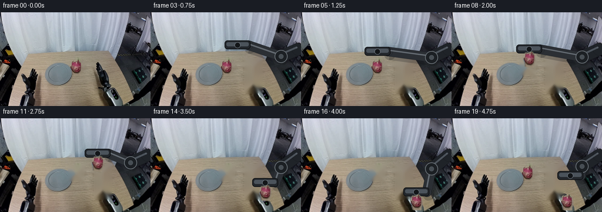
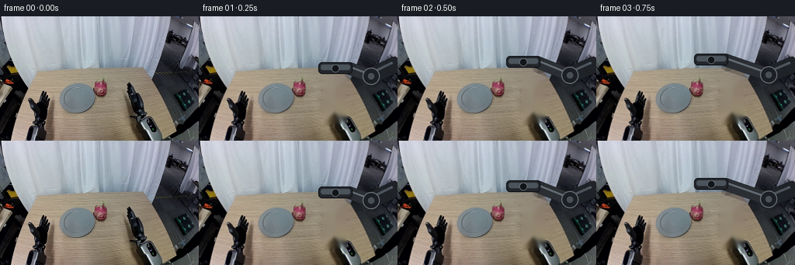
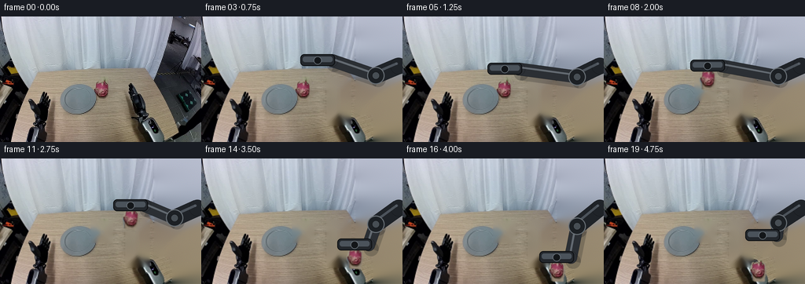
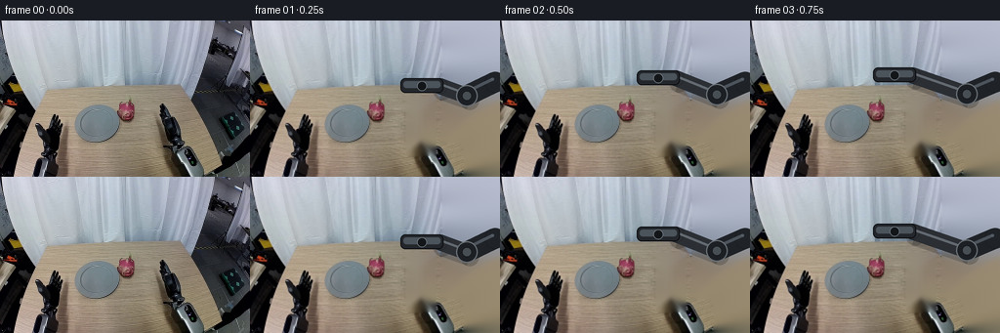

CODING AGENTS AS PIXEL WORLD MODELS
traex/DeepSeek-V4.1-Flash · common50_0042
点击播放 · 原生 RGB 像素
逐轮保存的候选
回放视频、检查图与代码变化。
每份候选均可单独播放。实际图片检查记录在下方工具轨迹中。
候选 01播放与检查图
点击播放 · 原生 RGB 像素


展开代码变化
--- 上一保存版本
+++ 本次保存版本
@@ -0,0 +1,484 @@
+from pathlib import Path
+
+import cv2
+import numpy as np
+from PIL import Image, ImageDraw
+
+import artifact_io
+
+
+CASE_DIR = Path(__file__).resolve().parent
+FRAME_COUNT = 20
+WIDTH = 256
+HEIGHT = 160
+SUPERSAMPLE = 4
+
+
+def smoothstep(value):
+ value = float(np.clip(value, 0.0, 1.0))
+ return value * value * (3.0 - 2.0 * value)
+
+
+def lerp(a, b, amount):
+ return float(a) + (float(b) - float(a)) * float(amount)
+
+
+def catmull_rom(points, amount):
+ """Sample a centripetal-looking spline through the supplied control points."""
+ points = np.asarray(points, dtype=np.float64)
+ if len(points) == 2:
+ return tuple(points[0] * (1.0 - amount) + points[1] * amount)
+ scaled = np.clip(amount, 0.0, 1.0) * (len(points) - 1)
+ index = min(int(np.floor(scaled)), len(points) - 2)
+ t = scaled - index
+ p0 = points[max(index - 1, 0)]
+ p1 = points[index]
+ p2 = points[index + 1]
+ p3 = points[min(index + 2, len(points) - 1)]
+ t2 = t * t
+ t3 = t2 * t
+ result = 0.5 * (
+ 2.0 * p1
+ + (-p0 + p2) * t
+ + (2.0 * p0 - 5.0 * p1 + 4.0 * p2 - p3) * t2
+ + (-p0 + 3.0 * p1 - 3.0 * p2 + p3) * t3
+ )
+ return tuple(result)
+
+
+def make_fruit_sprite(source):
+ """Recover the fruit and a clean feathered alpha from the source frame."""
+ rgb = source.astype(np.float32)
+ r, g, b = rgb[..., 0], rgb[..., 1], rgb[..., 2]
+ yy, xx = np.indices((HEIGHT, WIDTH))
+ roi = (xx >= 114) & (xx <= 143) & (yy >= 78) & (yy <= 108)
+ maximum = rgb.max(axis=2)
+ minimum = rgb.min(axis=2)
+ saturation = (maximum - minimum) / np.maximum(maximum, 1.0)
+ core = (
+ roi
+ & (r > 48.0)
+ & (r > g * 1.10)
+ & (r > b * 0.97)
+ & (saturation > 0.10)
+ )
+ core_u8 = core.astype(np.uint8)
+ kernel = np.ones((3, 3), np.uint8)
+ core_u8 = cv2.morphologyEx(core_u8, cv2.MORPH_CLOSE, kernel)
+ core_u8 = cv2.dilate(core_u8, kernel, iterations=1)
+
+ # Fill the fruit silhouette, then soften only its outside edge.
+ contours, _ = cv2.findContours(
+ core_u8, cv2.RETR_EXTERNAL, cv2.CHAIN_APPROX_SIMPLE
+ )
+ solid = np.zeros((HEIGHT, WIDTH), np.uint8)
+ for contour in contours:
+ if cv2.contourArea(contour) >= 20.0:
+ cv2.drawContours(solid, [contour], -1, 255, thickness=cv2.FILLED)
+ solid = cv2.morphologyEx(solid, cv2.MORPH_CLOSE, kernel, iterations=2)
+
+ alpha = cv2.GaussianBlur(solid.astype(np.float32) / 255.0, (0, 0), 0.75)
+ alpha = np.clip((alpha - 0.08) / 0.84, 0.0, 1.0)
+ ys, xs = np.where(solid > 0)
+ x0, x1 = int(xs.min()) - 1, int(xs.max()) + 2
+ y0, y1 = int(ys.min()) - 1, int(ys.max()) + 2
+ return source[y0:y1, x0:x1].copy(), alpha[y0:y1, x0:x1].copy(), (x0, y0)
+
+
+def build_clean_plate(source, fruit_bbox, gripper_bbox):
+ mask = np.zeros((HEIGHT, WIDTH), np.uint8)
+ x0, y0, x1, y1 = fruit_bbox
+ mask[y0:y1, x0:x1] = 255
+ x0, y0, x1, y1 = gripper_bbox
+ mask[y0:y1, x0:x1] = 255
+ return cv2.inpaint(
+ source[:, :, ::-1].copy(), mask, 5.0, cv2.INPAINT_TELEA
+ )[:, :, ::-1].copy()
+
+
+def transform_sprite(sprite, alpha, center, angle):
+ h, w = sprite.shape[:2]
+ matrix = cv2.getRotationMatrix2D((w * 0.5 - 0.5, h * 0.5 - 0.5), angle, 1.0)
+ matrix[0, 2] += center[0] - w * 0.5 + 0.5
+ matrix[1, 2] += center[1] - h * 0.5 + 0.5
+ warped_rgb = cv2.warpAffine(
+ sprite,
+ matrix,
+ (WIDTH, HEIGHT),
+ flags=cv2.INTER_LINEAR,
+ borderMode=cv2.BORDER_CONSTANT,
+ borderValue=(0, 0, 0),
+ )
+ warped_alpha = cv2.warpAffine(
+ alpha,
+ matrix,
+ (WIDTH, HEIGHT),
+ flags=cv2.INTER_LINEAR,
+ borderMode=cv2.BORDER_CONSTANT,
+ borderValue=0.0,
+ )
+ return warped_rgb, np.clip(warped_alpha, 0.0, 1.0)
+
+
+def composite_sprite(canvas, sprite, alpha):
+ alpha3 = alpha[..., None]
+ return np.clip(
+ canvas.astype(np.float32) * (1.0 - alpha3)
+ + sprite.astype(np.float32) * alpha3,
+ 0.0,
+ 255.0,
+ ).astype(np.uint8)
+
+
+def capsule(draw, start, end, width, fill, outline=None):
+ start = tuple(float(v) for v in start)
+ end = tuple(float(v) for v in end)
+ dx, dy = end[0] - start[0], end[1] - start[1]
+ length = max(float(np.hypot(dx, dy)), 1e-3)
+ nx, ny = -dy / length, dx / length
+ radius = width * 0.5
+ points = [
+ (start[0] + nx * radius, start[1] + ny * radius),
+ (end[0] + nx * radius, end[1] + ny * radius),
+ (end[0] - nx * radius, end[1] - ny * radius),
+ (start[0] - nx * radius, start[1] - ny * radius),
+ ]
+ draw.polygon(points, fill=fill, outline=outline)
+ draw.ellipse(
+ (
+ start[0] - radius,
+ start[1] - radius,
+ start[0] + radius,
+ start[1] + radius,
+ ),
+ fill=fill,
+ outline=outline,
+ )
+ draw.ellipse(
+ (
+ end[0] - radius,
+ end[1] - radius,
+ end[0] + radius,
+ end[1] + radius,
+ ),
+ fill=fill,
+ outline=outline,
+ )
+
+
+def draw_arm_and_gripper(frame, wrist, openness, grasp_glow=0.0):
+ """Draw an articulated charcoal arm with a rigid two-finger gripper."""
+ scale = SUPERSAMPLE
+ large = Image.fromarray(frame).resize(
+ (WIDTH * scale, HEIGHT * scale), Image.Resampling.BICUBIC
+ )
+ draw = ImageDraw.Draw(large, "RGBA")
+ wx, wy = wrist[0] * scale, wrist[1] * scale
+
+ # The wrist sits above the fruit; the arm enters from the right-hand station.
+ elbow = np.array([222.0, 78.0 + (wy / scale - 90.0) * 0.16]) * scale
+ shoulder = np.array([251.0, 63.0]) * scale
+ joint = np.array([wx + 18.0 * scale, wy - 17.0 * scale])
+
+ # Soft cast shadow on the tabletop.
+ capsule(
+ draw,
+ joint + np.array([3.0 * scale, 5.0 * scale]),
+ elbow + np.array([3.0 * scale, 5.0 * scale]),
+ 19.0 * scale,
+ (14, 16, 18, 54),
+ )
+
+ capsule(
+ draw,
+ shoulder,
+ elbow,
+ 21.0 * scale,
+ (31, 35, 40, 255),
+ (13, 15, 18, 255),
+ )
+ capsule(
+ draw,
+ elbow,
+ joint,
+ 16.0 * scale,
+ (43, 47, 52, 255),
+ (15, 17, 20, 255),
+ )
+ # Machined highlights make the arm read as rigid metal rather than a flat icon.
+ capsule(
+ draw,
+ shoulder + np.array([-2.5 * scale, -3.0 * scale]),
+ elbow + np.array([-2.0 * scale, -3.0 * scale]),
+ 3.0 * scale,
+ (92, 100, 108, 190),
+ )
+ capsule(
+ draw,
+ elbow + np.array([-1.5 * scale, -2.5 * scale]),
+ joint + np.array([-1.0 * scale, -2.5 * scale]),
+ 2.2 * scale,
+ (122, 131, 139, 180),
+ )
+ draw.ellipse(
+ (
+ elbow[0] - 11.0 * scale,
+ elbow[1] - 11.0 * scale,
+ elbow[0] + 11.0 * scale,
+ elbow[1] + 11.0 * scale,
+ ),
+ fill=(28, 32, 36, 255),
+ outline=(105, 112, 118, 255),
+ width=max(1, int(1.3 * scale)),
+ )
+ draw.ellipse(
+ (
+ elbow[0] - 5.0 * scale,
+ elbow[1] - 5.0 * scale,
+ elbow[0] + 5.0 * scale,
+ elbow[1] + 5.0 * scale,
+ ),
+ fill=(71, 78, 84, 255),
+ outline=(20, 23, 26, 255),
+ width=max(1, int(0.8 * scale)),
+ )
+
+ # Wrist housing and palm.
+ draw.rounded_rectangle(
+ (
+ wx - 22.0 * scale,
+ wy - 25.0 * scale,
+ wx + 22.0 * scale,
+ wy - 10.0 * scale,
+ ),
+ radius=5.0 * scale,
+ fill=(35, 39, 44, 255),
+ outline=(11, 13, 15, 255),
+ width=max(1, int(1.2 * scale)),
+ )
+ draw.rounded_rectangle(
+ (
+ wx - 19.0 * scale,
+ wy - 22.0 * scale,
+ wx + 19.0 * scale,
+ wy - 15.0 * scale,
+ ),
+ radius=3.0 * scale,
+ fill=(75, 83, 91, 255),
+ )
+ draw.ellipse(
+ (
+ wx - 5.0 * scale,
+ wy - 22.0 * scale,
+ wx + 5.0 * scale,
+ wy - 12.0 * scale,
+ ),
+ fill=(19, 22, 25, 255),
+ outline=(115, 124, 132, 255),
+ width=max(1, int(0.8 * scale)),
+ )
+
+ half_gap = lerp(14.8, 10.1, openness)
+ finger_top = wy - 11.0
+ finger_bottom = wy + 15.5
+ for side in (-1.0, 1.0):
+ x = wx / scale + side * half_gap
+ inner_x = x - side * 1.8
+ outer_x = x + side * 3.0
+ points = [
+ (inner_x * scale, finger_top * scale),
+ (outer_x * scale, finger_top * scale),
+ ((outer_x - side * 0.8) * scale, finger_bottom * scale),
+ ((inner_x + side * 1.2) * scale, finger_bottom * scale),
+ ]
+ draw.polygon(points, fill=(37, 42, 47, 255))
+ draw.line(
+ [
+ (inner_x * scale, (finger_top + 1.0) * scale),
+ (
+ (inner_x + side * 1.0) * scale,
+ (finger_bottom - 1.5) * scale,
+ ),
+ ],
+ fill=(116, 125, 133, 225),
+ width=max(1, int(1.0 * scale)),
+ )
+ draw.line(
+ [
+ (outer_x * scale, (finger_top + 1.0) * scale),
+ (
+ (outer_x - side * 0.5) * scale,
+ (finger_bottom - 2.0) * scale,
+ ),
+ ],
+ fill=(11, 13, 15, 255),
+ width=max(1, int(1.0 * scale)),
+ )
+ # Rubber contact pad.
+ pad_x = inner_x + side * 0.2
+ draw.line(
+ [
+ (pad_x * scale, (finger_top + 4.0) * scale),
+ (pad_x * scale, (finger_bottom - 3.0) * scale),
+ ],
+ fill=(15, 17, 18, 245),
+ width=max(1, int(1.6 * scale)),
+ )
+
+ if grasp_glow > 0.0:
+ glow = Image.new("RGBA", large.size, (0, 0, 0, 0))
+ glow_draw = ImageDraw.Draw(glow)
+ glow_draw.ellipse(
+ (
+ wx - 16.0 * scale,
+ wy - 14.0 * scale,
+ wx + 16.0 * scale,
+ wy + 16.0 * scale,
+ ),
+ outline=(220, 96, 124, int(70 * grasp_glow)),
+ width=max(1, int(1.0 * scale)),
+ )
+ large = Image.alpha_composite(large.convert("RGBA"), glow)
+
+ return np.asarray(
+ large.convert("RGB").resize(
+ (WIDTH, HEIGHT), Image.Resampling.LANCZOS
+ )
+ ).astype(np.uint8)
+
+
+def pose_for_frame(index, origin, target):
+ """Return wrist position, jaw openness, fruit center, and fruit angle."""
+ approach = [
+ (176.0, 84.0),
+ (162.0, 76.0),
+ (148.0, 73.0),
+ (137.0, 76.0),
+ (130.0, 84.0),
+ ]
+ carry = [
+ (130.0, 87.0),
+ (132.0, 80.0),
+ (140.0, 73.0),
+ (152.0, 70.0),
+ (166.0, 77.0),
+ (180.0, 91.0),
+ (190.0, 110.0),
+ (195.0, 127.0),
+ (196.0, 139.0),
+ ]
+ wrist = origin
+ openness = 1.0
+ fruit_center = origin
+ angle = 0.0
+ attached = False
+
+ if 1 <= index <= 5:
+ wrist = approach[index - 1]
+ openness = 1.0
+ elif index == 6:
+ wrist = (129.0, 91.0)
+ openness = 0.38
+ attached = True
+ elif 7 <= index <= 15:
+ wrist = carry[index - 7]
+ openness = 0.0
+ attached = True
+ elif index >= 16:
+ if index == 16:
+ wrist = (196.0, 143.0)
+ openness = 0.28
+ elif index == 17:
+ wrist = (196.0, 143.0)
+ openness = 0.92
+ elif index == 18:
+ wrist = (198.0, 132.0)
+ openness = 1.0
+ else:
+ wrist = (202.0, 115.0)
+ openness = 1.0
+ attached = index <= 16
+
+ if attached:
+ fruit_center = wrist
+ if index <= 6:
+ angle = 0.0
+ else:
+ progress = (index - 7) / 8.0
+ angle = -7.0 * np.sin(np.pi * np.clip(progress, 0.0, 1.0))
+ if index >= 16:
+ fruit_center = (196.0, 143.0)
+ angle = 0.0
+
+ return wrist, openness, fruit_center, angle, attached
+
+
+def generate():
+ source = np.asarray(Image.open(CASE_DIR / "first_frame.png").convert("RGB"))
+ if source.shape != (HEIGHT, WIDTH, 3):
+ raise ValueError(f"Unexpected first frame shape: {source.shape}")
+
+ sprite, sprite_alpha, sprite_origin = make_fruit_sprite(source)
+ sprite_center = (
+ sprite_origin[0] + sprite.shape[1] * 0.5 - 0.5,
+ sprite_origin[1] + sprite.shape[0] * 0.5 - 0.5,
+ )
+ clean = build_clean_plate(
+ source,
+ fruit_bbox=(115, 79, 144, 108),
+ gripper_bbox=(159, 77, 191, 139),
+ )
+
+ # Keep the untouched source crop in place until the fingers close.
+ static_crop = source[79:108, 115:144].copy()
+
+ frames = []
+ for index in range(FRAME_COUNT):
+ if index == 0:
+ frames.append(source.copy())
+ continue
+
+ frame = clean.copy()
+ wrist, openness, fruit_center, angle, attached = pose_for_frame(
+ index, sprite_center, (196.0, 143.0)
+ )
+
+ if not attached:
+ frame[79:108, 115:144] = static_crop
+
+ grasp_glow = 0.0
+ if index == 6:
+ grasp_glow = 1.0
+ elif index == 7:
+ grasp_glow = 0.45
+ frame = draw_arm_and_gripper(frame, wrist, openness, grasp_glow)
+
+ if attached:
+ warped, warped_alpha = transform_sprite(
+ sprite, sprite_alpha, fruit_center, angle
+ )
+ frame = composite_sprite(frame, warped, warped_alpha)
+ elif index >= 16:
+ warped, warped_alpha = transform_sprite(
+ sprite, sprite_alpha, (196.0, 143.0), 0.0
+ )
+ frame = composite_sprite(frame, warped, warped_alpha)
+
+ # Once released, the fruit remains fixed on the plate while the arm retracts.
+ if index >= 17:
+ warped, warped_alpha = transform_sprite(
+ sprite, sprite_alpha, (196.0, 143.0), 0.0
+ )
+ frame = composite_sprite(frame, warped, warped_alpha)
+
+ frames.append(frame)
+
+ frames = np.asarray(frames, dtype=np.uint8)
+ assert frames.shape == (FRAME_COUNT, HEIGHT, WIDTH, 3)
+ assert np.array_equal(frames[0], source)
+ artifact_io.save(frames, CASE_DIR)
+ return frames
+
+
+if __name__ == "__main__":
+ generate()
候选 02播放与检查图
点击播放 · 原生 RGB 像素


展开代码变化
--- 上一保存版本
+++ 本次保存版本
@@ -91,8 +91,14 @@
mask[y0:y1, x0:x1] = 255
x0, y0, x1, y1 = gripper_bbox
mask[y0:y1, x0:x1] = 255
+
+ # The supplied frame contains a large right-side robot silhouette. Remove
+ # it so the articulated arm can move independently, while retaining the
+ # visible grey plate in front of the table.
+ mask[0:126, 196:256] = 255
+ mask[126:160, 218:256] = 255
return cv2.inpaint(
- source[:, :, ::-1].copy(), mask, 5.0, cv2.INPAINT_TELEA
+ source[:, :, ::-1].copy(), mask, 7.0, cv2.INPAINT_TELEA
)[:, :, ::-1].copy()
@@ -443,33 +449,27 @@
index, sprite_center, (196.0, 143.0)
)
- if not attached:
- frame[79:108, 115:144] = static_crop
-
grasp_glow = 0.0
if index == 6:
grasp_glow = 1.0
elif index == 7:
grasp_glow = 0.45
- frame = draw_arm_and_gripper(frame, wrist, openness, grasp_glow)
if attached:
warped, warped_alpha = transform_sprite(
sprite, sprite_alpha, fruit_center, angle
)
frame = composite_sprite(frame, warped, warped_alpha)
- elif index >= 16:
+ elif index >= 17:
warped, warped_alpha = transform_sprite(
sprite, sprite_alpha, (196.0, 143.0), 0.0
)
frame = composite_sprite(frame, warped, warped_alpha)
- # Once released, the fruit remains fixed on the plate while the arm retracts.
- if index >= 17:
- warped, warped_alpha = transform_sprite(
- sprite, sprite_alpha, (196.0, 143.0), 0.0
- )
- frame = composite_sprite(frame, warped, warped_alpha)
+ if index <= 5:
+ frame[79:108, 115:144] = static_crop
+
+ frame = draw_arm_and_gripper(frame, wrist, openness, grasp_glow)
frames.append(frame)
可观测工具轨迹
实际执行的命令与返回图片。
命令 1exit 0
/bin/bash -c "pwd && rg --files -g '"'!*.mp4'"' -g '"'!*.mov'"' -g '"'!*.webm'"'"
命令 2exit 0
/bin/bash -c "printf '%s\\n' '--- prompt.txt ---'; sed -n '1,240p' prompt.txt; printf '%s\\n' '--- GENERATION_RULES.md ---'; sed -n '1,280p' GENERATION_RULES.md"
命令 3exit 0
/bin/bash -c 'ls -lah && file first_frame.png 2>/dev/null || true && (command -v ffmpeg || true) && (command -v ffprobe || true) && (command -v python3 || true)'
命令 4exit 0
/bin/bash -c "sed -n '1,260p' artifact_io.py"
命令 5exit 0
/bin/bash -c "cat task_spec.json && python3 - <<'PY'
from PIL import Image
import numpy as np
im=Image.open('first_frame.png').convert('RGB')
a=np.asarray(im)
print('mode,size', im.mode, im.size, 'shape', a.shape, 'dtype', a.dtype)
print('global min/max/mean/std', a.min((0,1)), a.max((0,1)), a.mean((0,1)).round(2), a.std((0,1)).round(2))
# dominant quantized colors
q=(a//16)*16
c,n=np.unique(q.reshape(-1,3),axis=0,return_counts=True)
idx=np.argsort(n)[-25:][::-1]
for i in idx: print(tuple(c[i]), int(n[i]), round(float(n[i])/a.shape[0]/a.shape[1]*100,2))
PY"命令 6exit 1
/bin/bash -c 'for c in chafa viu jp2 timg img2txt; do command -v "$c" && echo "$c"; done'
命令 7exit 0
/bin/bash -c "python3 - <<'PY'
from PIL import Image
import numpy as np
a=np.asarray(Image.open('first_frame.png').convert('RGB')).astype(float)
r,g,b=a.transpose(2,0,1)
masks={
'pink':(r>g*1.25)&(r>b*1.05)&(r>90),
'red':(r>1.35*g)&(r>1.35*b)&(r>80),
'green':(g>1.18*r)&(g>1.05*b)&(g>45),
'yellow':(r>1.15*b)&(g>1.05*b)&(r>90)&(g>70),
'bright':(r>190)&(g>190)&(b>190),
'dark':(r<45)&(g<45)&(b<45),
'wood':(r>g*1.05)&(g>b*1.08)&(r<200)&(g<175),
'bluegray':(b>r*1.04)&(b>g*1.02)&(r>80),
}
for name,m in masks.items():
y,x=np.where(m)
print(name,'n',len(x),'bbox', (x.min(),y.min(),x.max(),y.max()) if len(x) else None,'centroid', (x.mean().round(1),y.mean().round(1)) if len(x) else None)
# dominant hue bins on saturation
mx=a.max(2); mn=a.min(2); sat=(mx-mn)/(mx+1e-6)
for s in [.15,.3,.5]:
print('sat>',s,'count',(sat>s).sum())
# row/col stats for pink candidates
m=masks['pink']
for y in range(0,160,10):
xs=np.where(m[y:y+10].any(0))[0]
if len(xs): print('pink row',y, 'x',xs.min(),xs.max(), 'count',m[y:y+10].sum())
PY"命令 8exit 0
/bin/bash -c "python3 - <<'PY'
from PIL import Image
import numpy as np
a=np.asarray(Image.open('first_frame.png').convert('RGB')).astype(float)
# ANSI truecolor terminal preview, 128x80 (2x height chars)
h,w=a.shape[:2]
for y in range(0,h,2):
row=[]
for x in range(0,w,2):
p=a[y:y+2,x:x+2].mean((0,1)).astype(int)
row.append('\\x1b[38;2;%d;%d;%dmâÂÂ'%tuple(p))
print(''.join(row)+'\\x1b[0m')
PY"命令 9exit 0
/bin/bash -c "python3 - <<'PY'
from PIL import Image
import numpy as np
a=np.asarray(Image.open('first_frame.png').convert('RGB'))
# ANSI 16-color classification preview, 96x48. Edge-aware symbol density.
r,g,b=a[:,:,0].astype(float),a[:,:,1].astype(float),a[:,:,2].astype(float)
# symbols: luminance
for y in range(0,160,4):
out=[]
for x in range(0,256,4):
p=a[y:y+4,x:x+4].mean((0,1)); R,G,B=p
mx=max(p); mn=min(p); sat=(mx-mn)/(mx+1e-6)
if R>110 and R>G*1.15 and R>B*1.02 and sat>.18: c='R'
elif R>130 and G>100 and B<G*.85 and sat>.18: c='Y'
elif G>R*1.1 and G>B*1.05: c='G'
elif mx>185 and sat<.13: c='W'
elif mx>135 and sat<.16: c='w'
elif mx<40: c='K'
elif mx<75: c='k'
elif B>R*1.08 and sat>.08: c='b'
elif R>G*1.08 and G>B*1.08: c='o'
elif mx>110: c='.'
else: c=','
out.append(c)
print(''.join(out))
PY"命令 10exit 0
/bin/bash -c "python3 - <<'PY'
from PIL import Image
import numpy as np
a=np.asarray(Image.open('first_frame.png').convert('RGB')).astype(float)
# print 8x8 crop means for y>=64 and x>=0, RGB compressed as hex plus class
def cls(p):
R,G,B=p; mx=p.max(); mn=p.min(); sat=(mx-mn)/(mx+1e-6)
if R>100 and R>G*1.18 and R>B*1.05 and sat>.20:return 'P'
if R>130 and G>95 and B<G*.78 and sat>.25:return 'Y'
if G>R*1.12 and G>B*1.02:return 'G'
if mx>195 and sat<.12:return 'W'
if mx>145 and sat<.16:return 'w'
if mx<45:return 'K'
if mx<80:return 'k'
if B>R*1.06 and sat>.10:return 'b'
if R>G*1.06 and G>B*1.08:return 'o'
if sat<.18:return 's'
return '.'
print(' '+''.join(f'{x:>8}' for x in range(0,256,16)))
for y in range(64,160,8):
row=[]
for x in range(0,256,16):
p=a[y:y+8,x:x+16].mean((0,1))
row.append(f'{int(p[0]):02x}{int(p[1]):02x}{int(p[2]):02x}{cls(p)}')
print(f'y{y:>3}: '+' '.join(row))
PY"命令 11exit 0
/bin/bash -c "python3 - <<'PY'
from PIL import Image
import numpy as np
a=np.asarray(Image.open('first_frame.png').convert('RGB')).astype(float)
# Candidate segmented connected components: HSV-ish masks
R,G,B=a[:,:,0],a[:,:,1],a[:,:,2]
mx=a.max(2);mn=a.min(2);sat=(mx-mn)/(mx+1e-6)
masks={
'magenta':(R>G*1.22)&(R>B*1.02)&(sat>.18)&(R>70),
'red':(R>G*1.30)&(R>B*1.30)&(sat>.25)&(R>65),
'orangewood':(R>G*1.08)&(G>B*1.06)&(sat>.12)&(R>60),
'metal':(mx>70)&(sat<.16),
'yellowgreen':(R>G*.88)&(G>B*1.15)&(G>75)&(R>80)&(sat>.18),
}
from collections import deque
for name,m in masks.items():
seen=np.zeros_like(m,bool); comps=[]
for y in range(160):
for x in range(256):
if not m[y,x] or seen[y,x]: continue
q=[(y,x)];seen[y,x]=1;pts=[]
while q:
yy,xx=q.pop();pts.append((yy,xx))
for dy,dx in ((1,0),(-1,0),(0,1),(0,-1)):
y2,x2=yy+dy,xx+dx
if 0<=y2<160 and 0<=x2<256 and m[y2,x2] and not seen[y2,x2]:
seen[y2,x2]=1;q.append((y2,x2))
if len(pts)>=15: comps.append(pts)
comps.sort(key=len,reverse=True)
print('\\n',name,'components',len(comps))
for pts in comps[:12]:
yy=np.array([p[0] for p in pts]);xx=np.array([p[1] for p in pts])
print(' n',len(pts),'bbox',xx.min(),yy.min(),xx.max(),yy.max(),'cent',round(xx.mean(),1),round(yy.mean(),1))
PY"命令 12exit 0
/bin/bash -c "python3 - <<'PY'
from PIL import Image
import numpy as np
a=np.asarray(Image.open('first_frame.png').convert('RGB')).astype(float)
# color quantization with coarse blocks, only bottom 80 px. 16 chars x 40 rows. Use 2x2 px blocks and classes.
R,G,B=a[:,:,0],a[:,:,1],a[:,:,2];mx=a.max(2);mn=a.min(2);sat=(mx-mn)/(mx+1e-6)
# char map for 64x40 downsample, y 80..160
for y in range(80,160,2):
out=''
for x in range(0,256,4):
p=a[y:y+2,x:x+4].mean((0,1)); r,g,b=p; m=p.max(); s=(m-p.min())/(m+1e-6)
if r>g*1.22 and r>b*1.02 and s>.18 and r>70: c='M'
elif r>g*1.3 and r>b*1.3 and s>.25: c='R'
elif r>g*1.08 and g>b*1.06 and s>.12: c='o'
elif g>r*1.12 and g>b*1.03 and s>.12: c='G'
elif m>200 and s<.12: c='W'
elif m>150 and s<.18: c='w'
elif m<35: c='K'
elif m<65: c='k'
elif b>r*1.06 and s>.10: c='b'
elif s<.18: c='s'
else: c='.'
out+=c
print(f'{y:3} {out}')
PY"命令 13exit 0
/bin/bash -c "python3 - <<'PY'
from PIL import Image
import numpy as np
im=Image.open('first_frame.png').convert('RGB')
# Save nearest enlarged crops of regions for later numeric inspection? only created candidate assets
for name,box in {'fruit':(110,72,148,108),'gripper':(165,65,235,130),'plate':(170,125,235,160),'left':(0,60,80,160),'full':(0,0,256,160)}.items():
im.crop(box).resize(((box[2]-box[0])*6,(box[3]-box[1])*6),Image.Resampling.NEAREST).save('.tmp/'+name+'.png')
# print fruit region exact per-pixel color classes, 2x2 bins
A=np.asarray(im).astype(float)
for name,box in {'fruit':(112,76,144,108),'gripper':(176,72,232,124),'plate':(174,128,230,160)}.items():
print('\\n###',name)
x0,y0,x1,y1=box
for y in range(y0,y1,2):
s=''
for x in range(x0,x1,2):
p=A[y:y+2,x:x+2].mean((0,1)); r,g,b=p; mx=p.max();mn=p.min();sat=(mx-mn)/(mx+1e-6)
if r>g*1.22 and r>b*1.02 and sat>.18 and r>70:c='M'
elif r>g*1.3 and r>b*1.3 and sat>.25:c='R'
elif r>g*1.08 and g>b*1.06 and sat>.12:c='o'
elif g>r*1.12 and g>b*1.03 and sat>.12:c='G'
elif mx>200 and sat<.12:c='W'
elif mx>150 and sat<.18:c='w'
elif mx<35:c='K'
elif mx<65:c='k'
elif b>r*1.06 and sat>.10:c='b'
elif sat<.18:c='s'
else:c='.'
s+=c
print(s)
PY"命令 14exit 0
/bin/bash -c "python3 - <<'PY'
from PIL import Image
import numpy as np
A=np.asarray(Image.open('first_frame.png').convert('RGB')).astype(float)
# 64x40 luminance ramp with edge-aware downsample average
ramp=' .:-=+*#%@'
for y in range(0,160,4):
s=''
for x in range(0,256,4):
p=A[y:y+4,x:x+4].mean((0,1))
lum=(0.2126*p[0]+0.7152*p[1]+0.0722*p[2])/255
s+=ramp[min(9,int(lum*10))]
print(f'{y:3d} {s}')
PY"命令 15exit 0
/bin/bash -c "python3 - <<'PY'
from PIL import Image
import numpy as np
A=np.asarray(Image.open('first_frame.png').convert('RGB')).astype(np.int16)
# horizontal gradient and vertical gradient to see edges in lower table
lum=(.2126*A[:,:,0]+.7152*A[:,:,1]+.0722*A[:,:,2])
gx=np.abs(np.diff(lum,axis=1)); gy=np.abs(np.diff(lum,axis=0))
print('top gradient coords')
for name,g in [('gx',gx),('gy',gy)]:
inds=np.argpartition(g.ravel(),-30)[-30:]; vals=[]
for ind in inds:
y,x=np.unravel_index(ind,g.shape); vals.append((float(g[y,x]),x,y))
for v,x,y in sorted(vals,reverse=True):print(name,round(v,1),x,y)
# specific RGB samples grid
pts=[(128,92),(130,90),(120,90),(140,95),(195,147),(200,140),(85,100),(100,100),(60,140),(170,90),(210,100),(230,140),(250,140),(100,60)]
for x,y in pts: print('pt',x,y,A[y,x])
# crop stats each region
for name,(x0,y0,x1,y1) in {'fruit':(116,78,142,106),'plate':(175,128,232,160),'table':(50,115,160,159),'gripper':(176,70,230,128)}.items():
r=A[y0:y1,x0:x1]
print(name,'mean',r.mean((0,1)).round(1),'std',r.std((0,1)).round(1),'min',r.min((0,1)),'max',r.max((0,1)))
PY"命令 16exit 0
/bin/bash -c "python3 - <<'PY' mods=['cv2','scipy','skimage','numpy','PIL','imageio','torch'] for m in mods: try: x=__import__(m); print(m,getattr(x,'__version__','ok')) except Exception as e: print(m,'NO',e) PY"
命令 17exit 0
/bin/bash -c "python3 - <<'PY'
import cv2, numpy as np
im=cv2.imread('first_frame.png')
g=cv2.cvtColor(im,cv2.COLOR_BGR2GRAY)
for p2 in [25,20,16,12]:
cs=cv2.HoughCircles(g,cv2.HOUGH_GRADIENT,dp=1,minDist=20,param1=80,param2=p2,minRadius=8,maxRadius=45)
print('p2',p2)
if cs is not None:
for c in np.round(cs[0]).astype(int)[:20]: print(tuple(c))
PY"命令 18exit 0
/bin/bash -c "python3 - <<'PY'
from PIL import Image
import numpy as np
im=Image.open('first_frame.png').convert('RGB')
A=np.asarray(im)
# Print region boundaries as RGB hex at selected lines
for y in [68,72,76,80,84,88,92,96,100,104,108,112,116,120,124,128,132,136,140,144,148,152,156,159]:
print('y',y, ' '.join(f'{x}:{A[y,x,0]:02x}{A[y,x,1]:02x}{A[y,x,2]:02x}' for x in range(0,256,16)))
PY"命令 19exit 0
/bin/bash -c "python3 - <<'PY'
from PIL import Image
import numpy as np
A=np.asarray(Image.open('first_frame.png').convert('RGB')).astype(float)
# List pink pixels by connected comp with RGB
R,G,B=A[:,:,0],A[:,:,1],A[:,:,2];m=(R>G*1.22)&(R>B*1.02)&((A.max(2)-A.min(2))/(A.max(2)+1e-6)>.18)&(R>70)
# print all y rows containing pink, x ranges/runs
for y in range(70,110):
xs=np.flatnonzero(m[y])
if len(xs):
runs=[]; start=prev=xs[0]
for x in xs[1:]:
if x>prev+1:runs.append((start,prev));start=x
prev=x
runs.append((start,prev))
print(y,runs,[tuple(A[y,x].astype(int)) for x in range(xs[0],xs[-1]+1,5)])
PY"命令 20exit 0
/bin/bash -c "python3 - <<'PY'
from PIL import Image
import numpy as np
A=np.asarray(Image.open('first_frame.png').convert('RGB')).astype(float)
# use local object boundaries via Canny and contours
import cv2
im=cv2.imread('first_frame.png'); gray=cv2.cvtColor(im,cv2.COLOR_BGR2GRAY)
edges=cv2.Canny(gray,50,130)
cs,_=cv2.findContours(edges,cv2.RETR_LIST,cv2.CHAIN_APPROX_SIMPLE)
out=[]
for c in cs:
x,y,w,h=cv2.boundingRect(c); area=cv2.contourArea(c); peri=cv2.arcLength(c,True)
if area>50 or (w>15 and h>8): out.append((area,w,h,x,y,peri))
for v in sorted(out,reverse=True)[:50]:print(v)
# crop save color maps
im2=cv2.imread('first_frame.png')
cv2.imwrite('.tmp/edges.png',edges)
PY"命令 21exit 1
/bin/bash -c "python3 - <<'PY'
import cv2, numpy as np
im=cv2.imread('first_frame.png'); gray=cv2.cvtColor(im,cv2.COLOR_BGR2GRAY)
edges=cv2.Canny(gray,35,100)
# block max edge count
for y in range(0,160,4):
s=''
for x in range(0,256,4):
n=edges[y:y+4,x:x+4].sum()
s+=' #'[n>=4]
print(f'{y:3d} {s}')
PY"命令 22exit 0
/bin/bash -c "python3 - <<'PY'
import cv2, numpy as np
im=cv2.imread('first_frame.png'); gray=cv2.cvtColor(im,cv2.COLOR_BGR2GRAY)
edges=cv2.Canny(gray,35,100)
for y in range(0,160,4):
s=''
for x in range(0,256,4):
n=int(edges[y:y+4,x:x+4].sum())
s+=('#' if n>=4 else ' ')
print(f'{y:3d} {s}')
PY"命令 23exit 0
/bin/bash -c "python3 - <<'PY'
from PIL import Image
import numpy as np
A=np.asarray(Image.open('first_frame.png').convert('RGB')).astype(float)
ramp=' .:-=+*#%@'
for y in range(45,135,2):
s=''
for x in range(175,256,1):
p=A[y:y+2,x:x+1].mean((0,1))
lum=(.2126*p[0]+.7152*p[1]+.0722*p[2])/255
s+=ramp[min(9,int(lum*10))]
print(f'{y:3d} {s}')
PY"命令 24exit 0
/bin/bash -c "python3 - <<'PY'
from PIL import Image
import numpy as np
A=np.asarray(Image.open('first_frame.png').convert('RGB')).astype(float)
# downscale each 2 px block with rgb category, region x 180..256 y 90..160
for y in range(90,160,2):
s=''
for x in range(180,256,2):
p=A[y:y+2,x:x+2].mean((0,1)); r,g,b=p;mx=p.max();mn=p.min();sat=(mx-mn)/(mx+1e-6)
if r>g*1.2 and r>b*1.04 and sat>.15 and r>70:c='M'
elif r>g*1.28 and r>b*1.28 and sat>.24:c='R'
elif r>g*1.08 and g>b*1.05 and sat>.12:c='o'
elif g>r*1.1 and g>b*1.03 and sat>.1:c='G'
elif mx>210 and sat<.12:c='W'
elif mx>165 and sat<.18:c='w'
elif mx>120 and sat<.16:c='s'
elif mx<35:c='K'
elif mx<70:c='k'
elif b>r*1.06 and sat>.1:c='b'
elif sat<.18:c='.'
else:c='?'
s+=c
print(f'{y:3d} {s}')
PY"命令 25exit 0
/bin/bash -c "python3 - <<'PY'
import cv2,numpy as np
im=cv2.imread('first_frame.png')
# dominant orientation / line segments
g=cv2.cvtColor(im,cv2.COLOR_BGR2GRAY)
ls=cv2.createLineSegmentDetector(cv2.LSD_REFINE_STD)
lines,width,prec,nfa=ls.detect(g)
if lines is not None:
out=[]
for l in lines[:,0]:
x1,y1,x2,y2=l; length=((x2-x1)**2+(y2-y1)**2)**.5
if length>20: out.append((length,tuple(np.round(l,1))))
for v in sorted(out,reverse=True)[:50]:print(v)
PY"命令 26exit 0
/bin/bash -c "python3 - <<'PY'
import cv2,numpy as np
im=cv2.imread('first_frame.png')
# Try thresholding white background and dark gripper; create overlays at several thresholds to inspect contour stats numerically
A=im[:,:,::-1].astype(float);R,G,B=A[:,:,0],A[:,:,1],A[:,:,2];mx=A.max(2);mn=A.min(2);sat=(mx-mn)/(mx+1e-6)
for t in [80,100,120,140,160,180]:
m=((mx<t)&(np.indices(mx.shape)[0]>55)).astype(np.uint8)*255
n,lab,stats,cents=cv2.connectedComponentsWithStats(m,8)
comps=[]
for i in range(1,n):
x,y,w,h,area=stats[i]
if area>50: comps.append((area,x,y,w,h,cents[i].round(1)))
print('t',t,sorted(comps,reverse=True)[:12])
PY"命令 27exit 0
/bin/bash -c "python3 - <<'PY'
from PIL import Image
import numpy as np
A=np.asarray(Image.open('first_frame.png').convert('RGB')).astype(float)
# print edge map for gripper with horizontal 2px bins and full y
import cv2
e=cv2.Canny(cv2.imread('first_frame.png'),30,90)
for y in range(55,140):
s=''
for x in range(155,256,2):
n=int(e[y:y+1,x:x+2].sum())
s+=('#' if n else ' ')
print(f'{y:3d} {s}')
PY"命令 28exit 0
/bin/bash -c "python3 - <<'PY'
from PIL import Image
import numpy as np
A=np.asarray(Image.open('first_frame.png').convert('RGB')).astype(float)
# 2x2 classification map
for y in range(0,160,2):
s=''
for x in range(0,256,2):
p=A[y:y+2,x:x+2].mean((0,1)); r,g,b=p; mx=p.max(); mn=p.min(); sat=(mx-mn)/(mx+1e-6)
if r>g*1.22 and r>b*1.03 and sat>.18 and r>65: c='R'
elif g>r*1.10 and g>b*1.03 and sat>.10: c='G'
elif mx>195 and sat<.13: c='W'
elif mx>160 and sat<.20: c='w'
elif mx>110 and sat<.18: c='s'
elif mx<35: c='K'
elif mx<75: c='k'
elif b>r*1.06 and sat>.10: c='b'
elif r>g*1.08 and g>b*1.06 and sat>.12: c='o'
elif sat<.18: c='.'
else: c='?'
s+=c
print(f'{y:03d} {s}')
PY"命令 29exit 0
/bin/bash -c "python3 - <<'PY'
from PIL import Image
import numpy as np
A=np.asarray(Image.open('first_frame.png').convert('RGB'))
lum=(.2126*A[:,:,0]+.7152*A[:,:,1]+.0722*A[:,:,2])
for y in range(50,160,2):
xs=np.flatnonzero(lum[y]<100)
runs=[]
if len(xs):
s=p=xs[0]
for x in xs[1:]:
if x>p+1:runs.append((s,p));s=x
p=x
runs.append((s,p))
runs=[r for r in runs if r[1]-r[0]+1>=3]
print(f'{y:3d}',runs)
PY"命令 30exit 0
/bin/bash -c "python3 - <<'PY'
from PIL import Image
import numpy as np
A=np.asarray(Image.open('first_frame.png').convert('RGB')).astype(float)
L=.2126*A[:,:,0]+.7152*A[:,:,1]+.0722*A[:,:,2]
for t in [50,80,110]:
print('\\nTHRESH',t)
for y in range(0,160,4):
xs=np.flatnonzero(L[y:y+4].min(0)<t)
runs=[]
if len(xs):
s=p=xs[0]
for x in xs[1:]:
if x>p+1:runs.append((s,p));s=x
p=x
runs.append((s,p))
runs=[r for r in runs if r[1]-r[0]>=2]
print(f'{y:3d}',runs)
PY"命令 31exit 0
/bin/bash -c "python3 - <<'PY'
from PIL import Image
import numpy as np
A=np.asarray(Image.open('first_frame.png').convert('RGB')).astype(float)
# quantify color ranges at dark gripper and plate
for name,box in {'gripperdark':(195,60,240,120),'plate':(180,130,230,160),'table':(70,100,170,159),'fruit':(120,84,139,102)}.items():
x0,y0,x1,y1=box;r=A[y0:y1,x0:x1]
print(name)
for q in [5,25,50,75,95]: print(q,np.percentile(r.reshape(-1,3),q,axis=0).round(1))
PY"命令 32exit 0
/bin/bash -c "python3 - <<'PY'
import cv2,numpy as np
im=cv2.imread('first_frame.png'); gray=cv2.cvtColor(im,cv2.COLOR_BGR2GRAY)
# Hough lines in ROI and display all
roi=gray[55:160,155:256]
e=cv2.Canny(roi,30,100)
lines=cv2.HoughLinesP(e,1,np.pi/180,threshold=10,minLineLength=10,maxLineGap=4)
out=[]
for l in lines[:,0]:
x1,y1,x2,y2=l; ln=np.hypot(x2-x1,y2-y1);ang=np.degrees(np.arctan2(y2-y1,x2-x1));out.append((ln,ang,(x1+155,y1+55,x2+155,y2+55)))
for v in sorted(out,reverse=True)[:80]:print(f'{v[0]:.1f} {v[1]:.0f}',v[2])
PY"命令 33exit 0
/bin/bash -c "python3 - <<'PY'
from PIL import Image
import numpy as np
A=np.asarray(Image.open('first_frame.png').convert('RGB')).astype(float)
# save 2x scaled full with edge overlay maybe no visual; print selected pixel values around fruit and background
for y in [80,84,88,92,96,100,104]:
print('y',y)
for x in range(116,142,2): print(x,tuple(A[y,x].astype(int)),end='; ')
print()
PY"命令 34exit 1
/bin/bash -c "python3 - <<'PY'
from PIL import Image
import numpy as np
A=np.asarray(Image.open('first_frame.png').convert('RGB')).astype(float)
# Print crop as ANSI using half blocks with fg top bg bottom at 2px width to actual terminal
for y in range(55,160,2):
s=''
for x in range(150,256,1):
p1=A[y,x].astype(int); p2=A[y+1,x].astype(int)
s+=f'\\x1b[38;2;{p1[0]};{p1[1]};{p1[2]}m\\x1b[48;2;{p2[0]};{p2[1]};{p2[2]}mâÃÂÃÂ'
print(s+'\\x1b[0m')
PY"命令 35exit 0
/bin/bash -c "python3 - <<'PY'
import numpy as np, cv2
from PIL import Image
A=np.asarray(Image.open('first_frame.png').convert('RGB'))
# print median colors in small grid
for y in range(55,160,5):
row=[]
for x in range(150,256,5):
p=A[y:y+5,x:x+5].reshape(-1,3); m=np.median(p,0).astype(int)
row.append(f'{m[0]:02x}{m[1]:02x}{m[2]:02x}')
print(y,' '.join(row))
PY"命令 36exit 0
/bin/bash -c "python3 - <<'PY'
from PIL import Image
import numpy as np
A=np.asarray(Image.open('first_frame.png').convert('RGB')).astype(float)
# print min/max/means for x-strips in gripper candidate area
for x in range(158,194,2):
p=A[78:126,x:x+2]
print(x, 'mean',p.mean((0,1)).round(1),'dark%',round(float((p.max(2)<80).mean()*100),1),'metal%',round(float((p.max(2)>=80).mean()*100),1))
PY"命令 37exit 0
/bin/bash -c "python3 - <<'PY'
from PIL import Image
import numpy as np
A=np.asarray(Image.open('first_frame.png').convert('RGB')).astype(float)
x0,y0,x1,y1=160,80,190,135
for y in range(y0,y1,2):
s=''
for x in range(x0,x1,1):
p=A[y:y+2,x].mean(0);r,g,b=p;mx=p.max();mn=p.min();sat=(mx-mn)/(mx+1e-6); lum=.2126*r+.7152*g+.0722*b
if lum<45:c='K'
elif lum<75:c='k'
elif sat<.10:c='m' # neutral metal
elif sat<.18:c='M'
elif r>g*1.08 and g>b*1.05:c='o'
elif b>r*1.06:c='b'
else:c='.'
s+=c
print(f'{y:3d} {s}')
PY"命令 38exit 0
/bin/bash -c "python3 - <<'PY'
from PIL import Image
import numpy as np
A=np.asarray(Image.open('first_frame.png').convert('RGB')).astype(float)
# print local coordinates relative to fruit bounding x120:138 y86:102 RGB 4x4 averages as ascii classes
for y in range(82,108):
s=''
for x in range(114,144):
p=A[y,x];r,g,b=p;mx=p.max();mn=p.min();sat=(mx-mn)/(mx+1e-6)
if r>g*1.2 and r>b*1.02 and sat>.18 and r>65:c='M'
elif r>g*1.3 and r>b*1.3 and sat>.25 and r>65:c='R'
elif r>g*1.08 and g>b*1.06 and sat>.12:c='o'
elif g>r*1.12 and g>b*1.03:c='G'
elif mx>200 and sat<.12:c='W'
elif mx>160 and sat<.18:c='w'
elif mx>120 and sat<.18:c='s'
elif mx<35:c='K'
elif mx<65:c='k'
elif b>r*1.06 and sat>.10:c='b'
elif sat<.18:c='.'
else:c='?'
s+=c
print(f'{y:3d} {s}')
PY"命令 39exit 0
/bin/bash -c "python3 - <<'PY'
from PIL import Image
import numpy as np
A=np.asarray(Image.open('first_frame.png').convert('RGB')).astype(float)
# scan for plate rim: brightness around 180,145 etc
for y in range(125,160):
vals=[]
for x in range(178,235):
r,g,b=A[y,x];
if max(r,g,b)>180 and max(r,g,b)-min(r,g,b)<25: vals.append(x)
if vals:
runs=[];s=p=vals[0]
for x in vals[1:]:
if x>p+1:runs.append((s,p));s=x
p=x
runs.append((s,p))
print(y,runs)
PY"命令 40exit 0
/bin/bash -c "python3 - <<'PY'
from PIL import Image
import numpy as np
A=np.asarray(Image.open('first_frame.png').convert('RGB')).astype(float)
# bounding boxes of bright rim region: print max lum by row x 180..240
L=.2126*A[:,:,0]+.7152*A[:,:,1]+.0722*A[:,:,2]
for y in range(125,160):
x=np.argmax(L[y,175:245])+175
print(y,x,round(L[y,x],1),tuple(A[y,x].astype(int)))
PY"命令 41exit 0
/bin/bash -c "python3 - <<'PY'
from PIL import Image
import numpy as np
A=np.asarray(Image.open('first_frame.png').convert('RGB')).astype(float)
# Connected comp of near-white rim (high lum, low-ish sat) in bottom right, print component stats
mx=A.max(2);mn=A.min(2);sat=(mx-mn)/(mx+1e-6);L=.2126*A[:,:,0]+.7152*A[:,:,1]+.0722*A[:,:,2]
for t in [180,200,220]:
m=(L>t)&(sat<.15)
m[:130]=0;m[:, :170]=0
import cv2
n,lab,stats,cents=cv2.connectedComponentsWithStats(m.astype(np.uint8),8)
print('t',t)
for i in range(1,n):
x,y,w,h,area=stats[i]
if area>5:print(area,x,y,w,h,cents[i].round(1))
PY"命令 42exit 0
/bin/bash -c "python3 - <<'PY'
from PIL import Image
import numpy as np
A=np.asarray(Image.open('first_frame.png').convert('RGB')).astype(float)
# print region x 170..240 y 120..160 in 2px block categories; add P for pale rim
for y in range(120,160,2):
s=''
for x in range(170,244,2):
p=A[y:y+2,x:x+2].mean((0,1));r,g,b=p;mx=p.max();mn=p.min();sat=(mx-mn)/(mx+1e-6);L=.2126*r+.7152*g+.0722*b
if L>175 and sat<.14:c='P'
elif r>g*1.2 and r>b*1.04 and sat>.15 and r>70:c='M'
elif r>g*1.28 and r>b*1.28 and sat>.24:c='R'
elif r>g*1.08 and g>b*1.05 and sat>.12:c='o'
elif g>r*1.1 and g>b*1.03 and sat>.1:c='G'
elif mx>160 and sat<.18:c='w'
elif mx>120 and sat<.16:c='s'
elif mx<35:c='K'
elif mx<70:c='k'
elif b>r*1.06 and sat>.1:c='b'
elif sat<.18:c='.'
else:c='?'
s+=c
print(f'{y:3d} {s}')
PY"命令 43exit 0
/bin/bash -c "python3 - <<'PY'
from PIL import Image
import numpy as np
A=np.asarray(Image.open('first_frame.png').convert('RGB')).astype(float)
# mean RGB in small grid 175:240 y 125:160 4px
for y in range(124,160,4):
print(y)
for x in range(176,240,8):
p=A[y:y+4,x:x+8].mean((0,1)).astype(int)
print(x,tuple(p),end='; ')
print()
PY"命令 44exit 0
/bin/bash -c "python3 - <<'PY'
from PIL import Image
import numpy as np
A=np.asarray(Image.open('first_frame.png').convert('RGB')).astype(float)
# classify grid around fruit with more detailed color names, every pixel
for y in range(80,108):
s=''
for x in range(114,144):
r,g,b=A[y,x];
if r>g*1.22 and r>b*1.02 and r>65:c='R'
elif r>g*1.08 and g>b*1.06 and r>60:c='o'
elif g>r*1.1 and g>b*1.03:c='G'
elif b>r*1.06:c='b'
elif max(r,g,b)>160:c='w'
elif max(r,g,b)>110:c='s'
elif max(r,g,b)>65:c='.'
else:c='K'
s+=c
print(f'{y:3d} {s}')
PY"命令 45exit 0
/bin/bash -c "python3 - <<'PY'
from PIL import Image
import numpy as np
A=np.asarray(Image.open('first_frame.png').convert('RGB')).astype(float)
# print 5x5 sample colors around plate center and boundaries
for y in range(132,160,4):
print('y',y)
for x in range(178,234,8): print(x,tuple(A[y,x].astype(int)),end=' ')
print()
PY"命令 46exit 0
/bin/bash -c "python3 - <<'PY'
from PIL import Image
import numpy as np
A=np.asarray(Image.open('first_frame.png').convert('RGB')).astype(float)
# bounding boxes of black holes in plate region
L=.2126*A[:,:,0]+.7152*A[:,:,1]+.0722*A[:,:,2]
for t in [5,10,20,30,40]:
m=L<t;m[:125]=0;m[:, :175]=0
import cv2
n,lab,stats,cents=cv2.connectedComponentsWithStats(m.astype(np.uint8),8)
print('t',t)
for i in range(1,n):
x,y,w,h,area=stats[i]
if area>10:print(area,x,y,w,h,cents[i].round(1))
PY"命令 47exit 0
/bin/bash -c "python3 - <<'PY'
from PIL import Image
import numpy as np
A=np.asarray(Image.open('first_frame.png').convert('RGB')).astype(float)
# save mask and inpaint masks for later maybe
import cv2
m=np.zeros((160,256),np.uint8)
m[78:108,116:144]=255
m[55:140,195:256]=255
# inpaint using cv2 telea to inspect candidate background
bgr=A[:,:,::-1].astype(np.uint8)
for rad in [3,5,8,12]:
out=cv2.inpaint(bgr,m,rad,cv2.INPAINT_TELEA)
cv2.imwrite(f'.tmp/inpaint{rad}.png',out)
PY"命令 48exit 0
/bin/bash -c "python3 - <<'PY'
from PIL import Image
import numpy as np
A=np.asarray(Image.open('first_frame.png').convert('RGB')).astype(float)
# Determine background patch for fruit: print patch means around bbox
for y in range(72,112,4):
row=[]
for x in range(108,150,4):
p=A[y:y+4,x:x+4].mean((0,1)).astype(int)
row.append(f'{p[0]:02x}{p[1]:02x}{p[2]:02x}')
print(y,' '.join(row))
PY"命令 49exit 0
/bin/bash -c "python3 - <<'PY'
from PIL import Image
import numpy as np
A=np.asarray(Image.open('first_frame.png').convert('RGB')).astype(float)
# RGB cluster summary for various regions and texture gradient orientation
for name,box in {'wood':(30,100,115,159),'fruit':(120,82,139,103),'platewood':(198,132,220,159),'darkgrip':(205,65,240,125)}.items():
x0,y0,x1,y1=box;p=A[y0:y1,x0:x1].reshape(-1,3)
print(name,'mean',p.mean(0).round(1),'cov',np.cov(p.T).round(1).tolist())
PY"命令 50exit 0
/bin/bash -c "python3 - <<'PY'
from PIL import Image
import numpy as np
A=np.asarray(Image.open('first_frame.png').convert('RGB')).astype(float)
# Look at bright neutral pixels within plate bbox, bounding / sample shape
x0,y0,x1,y1=175,125,245,160
r=A[y0:y1,x0:x1]
mx=r.max(2);mn=r.min(2);sat=(mx-mn)/(mx+1e-6)
for t in [130,150,170,190]:
m=(r.mean(2)>t)&(sat<.15)
ys,xs=np.where(m)
print(t,len(xs), (xs.min()+x0,ys.min()+y0,xs.max()+x0,ys.max()+y0) if len(xs) else None)
# row runs
for yy in range(0,y1-y0,4):
xx=np.where(m[yy:yy+4].any(0))[0]
if len(xx):print(' y',yy+y0,xx.min()+x0,xx.max()+x0)
PY"命令 51exit 0
/bin/bash -c "python3 - <<'PY'
from PIL import Image
import numpy as np
A=np.asarray(Image.open('first_frame.png').convert('RGB')).astype(float)
# save downsized with nearest? Maybe use Pillow to quantize categories into colored image for later; not visually available.
# Determine approximate fruit mask using color + connected comp
r,g,b=A[:,:,0],A[:,:,1],A[:,:,2];mx=A.max(2);mn=A.min(2);sat=(mx-mn)/(mx+1e-6)
m=(r>g*1.12)&(r>b*1.00)&(sat>.12)&(r>55)&(np.indices(r.shape)[1]>110)&(np.indices(r.shape)[1]<150)&(np.indices(r.shape)[0]>78)&(np.indices(r.shape)[0]<110)
import cv2
n,lab,stats,cents=cv2.connectedComponentsWithStats(m.astype(np.uint8),8)
for i in range(1,n):
x,y,w,h,area=stats[i]
if area>5:print(area,x,y,w,h,cents[i].round(1))
PY"命令 52exit 0
/bin/bash -c "python3 - <<'PY'
from PIL import Image
import numpy as np
A=np.asarray(Image.open('first_frame.png').convert('RGB')).astype(float)
# Save edge map for region to inspect maybe print luma of fruit bbox at full grid with thresholds
for y in range(80,108):
s=''
for x in range(114,145):
lum=(.2126*A[y,x,0]+.7152*A[y,x,1]+.0722*A[y,x,2])/255
s+=' .:-=+*#%@'[min(9,int(lum*10))]
print(f'{y:3d} {s}')
PY"命令 53exit 0
/bin/bash -c "python3 - <<'PY'
from PIL import Image
import numpy as np
A=np.asarray(Image.open('first_frame.png').convert('RGB')).astype(float)
# vertical sample center x 129 from y 60..130 and around x 100
for x in [100,110,120,129,140,150]:
print('x',x)
for y in range(60,130,5):print(y,tuple(A[y,x].astype(int)),end='; ')
print()
PY"命令 54exit 0
/bin/bash -c "python3 - <<'PY'
from PIL import Image
import numpy as np
A=np.asarray(Image.open('first_frame.png').convert('RGB')).astype(float)
# print HSV-ish object mask around fruit in exact coordinate with symbols + background estimate
for y in range(80,106):
s=''
for x in range(116,142):
r,g,b=A[y,x]; sat=(max(r,g,b)-min(r,g,b))/(max(r,g,b)+1e-6)
if r>g*1.18 and r>b*1.01 and sat>.18 and r>55: c='#'
elif max(r,g,b)>145: c='+'
elif max(r,g,b)>100: c='-'
elif max(r,g,b)>60: c='.'
else:c=' '
s+=c
print(f'{y:3d} {s}')
PY"命令 55exit 0
/bin/bash -c "python3 - <<'PY'
from PIL import Image
import numpy as np
A=np.asarray(Image.open('first_frame.png').convert('RGB')).astype(float)
# print coarse image at 64x40 using color categories more compact plus line numbers
for y in range(0,160,4):
s=''
for x in range(0,256,4):
p=A[y:y+4,x:x+4].mean((0,1)); r,g,b=p;mx=p.max();mn=p.min();sat=(mx-mn)/(mx+1e-6);L=.2126*r+.7152*g+.0722*b
if r>g*1.18 and r>b*1.02 and sat>.18 and r>65:c='R'
elif g>r*1.1 and g>b*1.03 and sat>.10:c='G'
elif L>190 and sat<.13:c='W'
elif L>150 and sat<.2:c='w'
elif L>110 and sat<.18:c='s'
elif L<35:c='K'
elif L<75:c='k'
elif b>r*1.06 and sat>.10:c='b'
elif r>g*1.08 and g>b*1.06 and sat>.12:c='o'
elif sat<.18:c='.'
else:c='?'
s+=c
print(f'{y:03d} {s}')
PY"命令 56exit 0
/bin/bash -c "python3 - <<'PY'
from PIL import Image
import numpy as np
A=np.asarray(Image.open('first_frame.png').convert('RGB')).astype(float)
# print 2x2 around target plate area as color letters using dominant channel and brightness
for y in range(120,160,2):
s=''
for x in range(170,244,2):
p=A[y:y+2,x:x+2].mean((0,1));r,g,b=p;mx=p.max();mn=p.min();sat=(mx-mn)/(mx+1e-6);L=.2126*r+.7152*g+.0722*b
if L>180 and sat<.16:c='P'
elif r>g*1.2 and r>b*1.04 and sat>.15 and r>70:c='M'
elif r>g*1.28 and r>b*1.28 and sat>.24:c='R'
elif r>g*1.08 and g>b*1.05 and sat>.12:c='o'
elif g>r*1.1 and g>b*1.03 and sat>.1:c='G'
elif mx>160 and sat<.18:c='w'
elif mx>120 and sat<.16:c='s'
elif mx<35:c='K'
elif mx<70:c='k'
elif b>r*1.06 and sat>.1:c='b'
elif sat<.18:c='.'
else:c='?'
s+=c
print(f'{y:3d} {s}')
PY"命令 57exit 0
/bin/bash -c "python3 - <<'PY'
from PIL import Image
import numpy as np
A=np.asarray(Image.open('first_frame.png').convert('RGB')).astype(float)
# For all rows, find left and right most bright rim candidate around x 180-230, y130-159
for y in range(132,160):
xs=[]
for x in range(178,232):
r,g,b=A[y,x];L=.2126*r+.7152*g+.0722*b;s=(max(r,g,b)-min(r,g,b))/(max(r,g,b)+1e-6)
if L>175 and s<.2:xs.append(x)
if xs:print(y,min(xs),max(xs),len(xs))
PY"命令 58exit 0
/bin/bash -c "python3 - <<'PY'
from PIL import Image
import numpy as np
A=np.asarray(Image.open('first_frame.png').convert('RGB')).astype(float)
# plate rim likely visible white crescent at left. Search neutral/blue gray ellipse using gradient in ROI: print local max of b-r etc
for y in range(125,160,3):
vals=[]
for x in range(175,235,3):
p=A[y,x]; lum=.2126*p[0]+.7152*p[1]+.0722*p[2]; sat=(p.max()-p.min())/(p.max()+1e-6)
if lum>150 and p[2]>=p[0]*.97: vals.append((x,tuple(p.astype(int)),round(lum)))
print(y,vals)
PY"命令 59exit 0
/bin/bash -c "python3 - <<'PY'
from PIL import Image
import numpy as np
A=np.asarray(Image.open('first_frame.png').convert('RGB')).astype(float)
# Sample expected plate center area and print RGB grid every 2px around x196-220 y142-159
for y in range(140,160,2):
print('y',y)
for x in range(190,224,2): print(f'{tuple(A[y,x].astype(int))}',end=' ')
print()
PY"命令 60exit 0
/bin/bash -c "python3 - <<'PY'
from PIL import Image
import numpy as np
A=np.asarray(Image.open('first_frame.png').convert('RGB')).astype(float)
# Measure likely gray plate ellipse: hue neutral gray pixels in ROI x175-230 y130-160, count by row and print candidate runs with lum>80 and sat<.22
for y in range(128,160):
m=[]
for x in range(175,232):
p=A[y,x]; L=.2126*p[0]+.7152*p[1]+.0722*p[2];s=(p.max()-p.min())/(p.max()+1e-6)
if L>70 and L<200 and s<.22: m.append(x)
runs=[]
if m:
s=p=m[0]
for x in m[1:]:
if x>p+1:runs.append((s,p));s=x
p=x
runs.append((s,p))
print(y,runs)
PY"命令 61exit 0
/bin/bash -c "python3 - <<'PY'
from PIL import Image
import numpy as np
A=np.asarray(Image.open('first_frame.png').convert('RGB')).astype(float)
# Look for ellipses with cv2 threshold neutral regions
import cv2
R,G,B=A[:,:,0],A[:,:,1],A[:,:,2]
mx=A.max(2);mn=A.min(2);sat=(mx-mn)/(mx+1e-6);L=.2126*R+.7152*G+.0722*B
for name,m in {
'grayplate':(L>65)&(L<210)&(sat<.20),
'bright':(L>130)&(sat<.18),
'cool':(B>R*1.01)&(L>70)&(sat<.2),
}.items():
m[:125]=0;m[:, :170]=0
n,lab,stats,cents=cv2.connectedComponentsWithStats(m.astype(np.uint8),8)
print(name)
for i in range(1,n):
x,y,w,h,area=stats[i]
if area>30:print(area,x,y,w,h,cents[i].round(1))
PY"命令 62exit 0
/bin/bash -c "python3 - <<'PY'
from PIL import Image
import numpy as np
A=np.asarray(Image.open('first_frame.png').convert('RGB')).astype(float)
# print 1px categories in gray plate component x181..220 y125..160 at 1 px
for y in range(125,160):
s=''
for x in range(181,220):
p=A[y,x];L=.2126*p[0]+.7152*p[1]+.0722*p[2];sat=(p.max()-p.min())/(p.max()+1e-6)
if L>180 and sat<.2:c='P'
elif L>120 and sat<.2:c='G'
elif L>65 and sat<.2:c='g'
elif L<20:c='K'
elif L<60:c='k'
elif sat>.2:c='o'
else:c='.'
s+=c
print(f'{y:3d} {s}')
PY"命令 63exit 0
/bin/bash -c "python3 - <<'PY'
from PIL import Image
import numpy as np
A=np.asarray(Image.open('first_frame.png').convert('RGB')).astype(float)
# print lower region x160..256 y125..160 all pixels categorized with K black etc in 2x2
for y in range(124,160,2):
s=''
for x in range(160,256,2):
p=A[y:y+2,x:x+2].mean((0,1));L=.2126*p[0]+.7152*p[1]+.0722*p[2];sat=(p.max()-p.min())/(p.max()+1e-6)
if L>180 and sat<.2:c='P'
elif L>120 and sat<.2:c='G'
elif L>65 and sat<.2:c='g'
elif L<20:c='K'
elif L<60:c='k'
elif p[0]>p[1]*1.08 and p[1]>p[2]*1.06:c='o'
elif p[2]>p[0]*1.06:c='b'
else:c='.'
s+=c
print(f'{y:3d} {s}')
PY"命令 64exit 0
/bin/bash -c "python3 - <<'PY'
from PIL import Image
import numpy as np
A=np.asarray(Image.open('first_frame.png').convert('RGB')).astype(float)
# print exact classification of lower right at 4px in another style: hue labels only, to identify plate
for y in range(124,160,4):
s=''
for x in range(160,256,4):
p=A[y:y+4,x:x+4].mean((0,1));r,g,b=p;L=.2126*r+.7152*g+.0722*b;sat=(p.max()-p.min())/(p.max()+1e-6)
if L>180 and sat<.2:c='P'
elif L>120 and sat<.2:c='G'
elif L>65 and sat<.2:c='g'
elif L<20:c='K'
elif L<60:c='k'
elif r>g*1.08 and g>b*1.06:c='o'
elif b>r*1.06:c='b'
else:c='.'
s+=c
print(f'{y:3d} {s}')
PY"命令 65exit 0
/bin/bash -c "python3 - <<'PY'
from PIL import Image
import numpy as np
A=np.asarray(Image.open('first_frame.png').convert('RGB')).astype(float)
# Check plate candidate geometry: gray annulus region likely x181-216 y125-159. print all pixels in ellipse classification at 1 px from x180..220 y125..160 with chars
# We will estimate center from bright neutral region 185..212 y135..159.
for y in range(130,160):
s=''
for x in range(180,224):
p=A[y,x];L=.2126*p[0]+.7152*p[1]+.0722*p[2];sat=(p.max()-p.min())/(p.max()+1e-6)
if L>195 and sat<.15:c='P'
elif L>130 and sat<.2:c='G'
elif L>80 and sat<.22:c='g'
elif L>45 and sat<.3:c='d'
elif L<15:c='K'
elif L<40:c='k'
else:c='o'
s+=c
print(f'{y:3d} {s}')
PY"命令 66exit 0
/bin/bash -c "python3 - <<'PY'
from PIL import Image
import numpy as np
A=np.asarray(Image.open('first_frame.png').convert('RGB')).astype(float)
# color table for region x170..256, y120..160 block 4 means with hue class and dominant
for y in range(120,160,4):
print('y',y)
for x in range(168,252,4):
p=A[y:y+4,x:x+4].mean((0,1)).astype(int)
print(f'{p[0]:02x}{p[1]:02x}{p[2]:02x}',end=' ')
print()
PY"命令 67exit 0
/bin/bash -c "python3 - <<'PY'
import cv2, numpy as np
from PIL import Image
A=np.asarray(Image.open('first_frame.png').convert('RGB')).astype(float)
L=.2126*A[:,:,0]+.7152*A[:,:,1]+.0722*A[:,:,2]
# dark component stats at thresholds in lower region, excluding table wood (wood lum ~120)
for t in [60,80,100,120]:
m=(L<t).astype(np.uint8); m[:55]=0
n,lab,stats,cents=cv2.connectedComponentsWithStats(m,8)
print('\\nT',t)
for i in range(1,n):
x,y,w,h,area=stats[i]
if area>40: print('area',area,'bbox',x,y,w,h,'cent',cents[i].round(1))
PY"命令 68exit 0
/bin/bash -c "python3 - <<'PY'
from PIL import Image
import numpy as np
A=np.asarray(Image.open('first_frame.png').convert('RGB')).astype(float)
# background colors at rows below fruit: medians of x 118..142 for y100-120
for y in range(100,130,2):
p=A[y:y+2,116:144].reshape(-1,3)
print(y,np.median(p,0).round(0),np.percentile(p,[10,90],axis=0).round(0))
PY"命令 69exit 0
/bin/bash -c "python3 - <<'PY'
from PIL import Image
import numpy as np
A=np.asarray(Image.open('first_frame.png').convert('RGB')).astype(float)
# grid of median colors 8x8 around plate x175..225 y128..160, with code based on lum/sat
for y in range(128,160,4):
print('y',y)
for x in range(176,224,4):
p=A[y:y+4,x:x+4].reshape(-1,3); m=np.median(p,0).astype(int); L=.2126*m[0]+.7152*m[1]+.0722*m[2]; sat=(m.max()-m.min())/(m.max()+1e-6)
print(f'{m[0]:3d},{m[1]:3d},{m[2]:3d} L{L:.0f}',end=' | ')
print()
PY"命令 70exit 0
/bin/bash -c "python3 - <<'PY'
from PIL import Image
import numpy as np
A=np.asarray(Image.open('first_frame.png').convert('RGB')).astype(float)
# print RGB of suspected plate annulus points
for y in [136,140,144,148,152,156,159]:
print('y',y)
for x in range(180,224,4): print(x,tuple(A[y,x].astype(int)),end='; ')
print()
PY"命令 71exit 1
/bin/bash -c "python3 - <<'PY'
from PIL import Image
import numpy as np
A=np.asarray(Image.open('first_frame.png').convert('RGB')).astype(float)
# print 1px color grid x 194..226 y148..160 abbreviated by rgb values
for y in range(146,160):
print('y',y, ' '.join(f'{A[y,x,0]:02x}{A[y,x,1]:02x}{A[y,x,2]:02x}' for x in range(190,226,2)))
PY"命令 72exit 0
/bin/bash -c "python3 - <<'PY'
from PIL import Image
import numpy as np
A=np.asarray(Image.open('first_frame.png').convert('RGB'))
for y in range(146,160):
print('y',y, ' '.join(f'{A[y,x,0]:02x}{A[y,x,1]:02x}{A[y,x,2]:02x}' for x in range(190,226,2)))
PY"命令 73exit 0
/bin/bash -c "python3 - <<'PY'
from PIL import Image
import numpy as np
A=np.asarray(Image.open('first_frame.png').convert('RGB')).astype(float)
# examine ellipse fit to bright rim pixels (lum>170,sat<.2, ROI). Fit conic via cv2.fitEllipse
import cv2
m=(np.indices(A.shape[:2])[1]>=178)&(np.indices(A.shape[:2])[1]<=220)&(np.indices(A.shape[:2])[0]>=130)
mx=A.max(2);mn=A.min(2);sat=(mx-mn)/(mx+1e-6);L=.2126*A[:,:,0]+.7152*A[:,:,1]+.0722*A[:,:,2]
for t in [150,170,190]:
mm=(m&(L>t)&(sat<.2)).astype(np.uint8)
cs,_=cv2.findContours(mm,cv2.RETR_EXTERNAL,cv2.CHAIN_APPROX_NONE)
pts=np.vstack([c for c in cs if len(c)>=5]) if cs else np.array([])
print('t',t,'npts',len(pts))
if len(pts)>=5: print(cv2.fitEllipse(pts.reshape(-1,1,2)))
PY"命令 74exit 0
/bin/bash -c "python3 - <<'PY'
from PIL import Image
import numpy as np
A=np.asarray(Image.open('first_frame.png').convert('RGB')).astype(float)
# Print crop dimensions of neutral object at x181..216 y125..159 using gray image ASCII with adaptive brightness local
for y in range(125,160):
s=''
for x in range(178,220):
p=A[y,x];L=.2126*p[0]+.7152*p[1]+.0722*p[2]
s+=' .:-=+*#%@'[min(9,int(L/255*10))]
print(f'{y:3d} {s}')
PY"命令 75exit 0
/bin/bash -c "python3 - <<'PY'
from PIL import Image
import numpy as np
A=np.asarray(Image.open('first_frame.png').convert('RGB')).astype(float)
# print color at selected x 190..205 y 135..159 1px, hex, mark neutral
for y in range(135,160):
vals=[]
for x in range(184,212):
r,g,b=A[y,x]; sat=(max(r,g,b)-min(r,g,b))/(max(r,g,b)+1e-6); L=.2126*r+.7152*g+.0722*b
if sat<.15 and L>55: vals.append(x)
print(y, vals)
PY"命令 76exit 1
/bin/bash -c 'python3 generate.py'
命令 77exit 0
/bin/bash -c 'python3 generate.py'
命令 78exit 0
/bin/bash -c "python3 - <<'PY'
from PIL import Image
import numpy as np
from pathlib import Path
src=np.asarray(Image.open('first_frame.png').convert('RGB'))
files=sorted(Path('frames').glob('*.png'))
arr=np.stack([np.asarray(Image.open(p).convert('RGB')) for p in files])
print('shape',arr.shape,'dtype',arr.dtype,'files',len(files))
print('frame0 exact',np.array_equal(arr[0],src),'maxdiff',np.abs(arr[0].astype(int)-src.astype(int)).max())
print('unique colors per frame', [len(np.unique(a.reshape(-1,3),axis=0)) for a in arr])
print('mean lum', [round(float((.2126*a[:,:,0]+.7152*a[:,:,1]+.0722*a[:,:,2]).mean()),2) for a in arr])
for i in range(1,20):
d=np.abs(arr[i].astype(int)-arr[i-1].astype(int))
print(i,'meanabs',round(float(d.mean()),3),'p99',np.percentile(d,99),'max',d.max())
# detect pink centroid each frame
for i,a in enumerate(arr):
r,g,b=a[:,:,0].astype(float),a[:,:,1].astype(float),a[:,:,2].astype(float)
m=(r>g*1.22)&(r>b*1.02)&((a.max(2)-a.min(2))/(a.max(2)+1e-6)>.18)&(r>70)
y,x=np.where(m)
if len(x):print('pink',i,len(x),round(x.mean(),1),round(y.mean(),1),(x.min(),y.min(),x.max(),y.max()))
PY"命令 79exit 0
/bin/bash -c "python3 - <<'PY'
from PIL import Image
import numpy as np
for fi in [0,1,4,6,8,10,12,14,16,17,19]:
A=np.asarray(Image.open(f'frames/{fi:02d}.png').convert('RGB')).astype(float)
print('\\n### FRAME',fi)
for y in range(52,160,4):
s=''
for x in range(0,256,4):
p=A[y:y+4,x:x+4].mean((0,1));r,g,b=p;mx=p.max();mn=p.min();sat=(mx-mn)/(mx+1e-6);L=.2126*r+.7152*g+.0722*b
if r>g*1.18 and r>b*1.02 and sat>.18 and r>65:c='R'
elif L>190 and sat<.13:c='W'
elif L>150 and sat<.2:c='w'
elif L>110 and sat<.18:c='s'
elif L<35:c='K'
elif L<75:c='k'
elif b>r*1.06 and sat>.10:c='b'
elif r>g*1.08 and g>b*1.06 and sat>.12:c='o'
elif sat<.18:c='.'
else:c='?'
s+=c
print(f'{y:03d} {s}')
PY"命令 80exit 0
/bin/bash -c "python3 - <<'PY'
from PIL import Image
import numpy as np
for fi in [0,4,8,12,16,19]:
a=np.asarray(Image.open(f'frames/{fi:02d}.png').convert('RGB')).astype(float)
print('\\nFRAME',fi)
# show dark component masks (L<80) in relevant area x150..256 y50..160 at 2px
L=.2126*a[:,:,0]+.7152*a[:,:,1]+.0722*a[:,:,2]
for y in range(50,160,2):
s=''
for x in range(150,256,2):
v=L[y:y+2,x:x+2].mean()
s+=('#' if v<50 else '+' if v<100 else ' ')
print(f'{y:3d} {s}')
PY"命令 81exit 0
/bin/bash -c "python3 generate.py && python3 - <<'PY'
from PIL import Image
import numpy as np
from pathlib import Path
src=np.asarray(Image.open('first_frame.png').convert('RGB'))
arr=np.stack([np.asarray(Image.open(p).convert('RGB')) for p in sorted(Path('frames').glob('*.png'))])
print('shape',arr.shape,'f0',np.array_equal(arr[0],src))
for i in [0,4,8,12,16,19]:
a=arr[i].astype(float);R,G,B=a[:,:,0],a[:,:,1],a[:,:,2];mx=a.max(2);mn=a.min(2);s=(mx-mn)/(mx+1e-6)
m=(R>G*1.22)&(R>B*1.02)&(s>.18)&(R>70)
y,x=np.where(m)
# component near fruit/plate
print('pink',i,len(x), (round(x.mean(),1),round(y.mean(),1)) if len(x) else None)
print('diffs',[round(float(np.abs(arr[i].astype(int)-arr[i-1].astype(int)).mean()),2) for i in range(1,20)])
PY"命令 82exit 0
/bin/bash -c "python3 - <<'PY'
from PIL import Image
import numpy as np
A=np.asarray(Image.open('first_frame.png').convert('RGB')).astype(float)
# sample exact black and gray region rows
for y in [55,60,65,70,75,80,85,90,95,100,105,110,115,120,125,130,135,140,145,150,155,159]:
print('y',y, ' '.join(f'x{x}:{tuple(A[y,x].astype(int))}' for x in range(180,256,8)))
PY"命令 83exit 0
/bin/bash -c "sed -n '1,240p' generate.py"
命令 84exit 0
/bin/bash -c "sed -n '241,520p' generate.py"
命令 85exit 0
/bin/bash -c 'cat GENERATION_RULES.md'
命令 86exit 0
/bin/bash -c "cat prompt.txt && printf '\\n--- spec ---\\n' && cat task_spec.json && printf '\\n--- files ---\\n' && rg --files -g '"'!frames/**'"' -g '"'!.tmp/**'"' | sort"
命令 87exit 0
/bin/bash -c "python3 - <<'PY'
from PIL import Image
import numpy as np
im=np.asarray(Image.open('first_frame.png').convert('RGB'))
# Luminance ASCII downsample 2x2, one char per 2x2
lum=(.2126*im[:,:,0]+.7152*im[:,:,1]+.0722*im[:,:,2])
chars=' .:-=+*#%@'
for y in range(0,160,4):
line=''
for x in range(0,256,4):
block=lum[y:y+4,x:x+4]
v=block.mean()
line+=chars[min(len(chars)-1,int(v/256*len(chars)))]
print(f'{y:03d} {line}')
PY"命令 88exit 0
/bin/bash -c "python3 - <<'PY'
from PIL import Image
import numpy as np, cv2
im=np.asarray(Image.open('first_frame.png').convert('RGB'))
print(im.shape, im.dtype, im.min(), im.max())
# report rows/cols color mean and gradient energies
lum=cv2.cvtColor(im,cv2.COLOR_RGB2GRAY)
gx=cv2.Sobel(lum,cv2.CV_32F,1,0,ksize=3); gy=cv2.Sobel(lum,cv2.CV_32F,0,1,ksize=3)
for y in range(0,160,10):
print('row',y,'mean',np.round(im[y:y+10].mean((0,1)),1),'edge',round(float(np.abs(gx[y:y+10]).mean()+np.abs(gy[y:y+10]).mean()),1))
PY"命令 89exit 0
/bin/bash -c "python3 - <<'PY'
from PIL import Image
import numpy as np, cv2
im=np.asarray(Image.open('first_frame.png').convert('RGB'))
# sample region medians
for name,(x0,y0,x1,y1) in {
'fruit':(118,80,140,104),'gripper':(158,75,195,140),'robot':(196,55,256,160),'plate':(176,125,220,160),'table':(30,110,170,160),'left':(0,70,100,160),'bg':(0,0,256,70)
}.items():
a=im[y0:y1,x0:x1].reshape(-1,3)
print(name,'mean',np.round(a.mean(0),1),'med',np.median(a,axis=0),'std',np.round(a.std(0),1))
PY"命令 90exit 0
/bin/bash -c "python3 - <<'PY'
from PIL import Image
import numpy as np, cv2
im=np.asarray(Image.open('first_frame.png').convert('RGB'))
lum=cv2.cvtColor(im,cv2.COLOR_RGB2GRAY)
# dominant components under different thresholds
for th in (40,60,80,100):
m=(lum<th).astype(np.uint8)
n,lab,stats,cent=cv2.connectedComponentsWithStats(m,8)
comps=sorted([(s[4],tuple(s[:4]),tuple(np.round(c,1))) for s,c in zip(stats[1:],cent[1:])],reverse=True)[:8]
print('dark<',th,comps)
PY"命令 91exit 0
/bin/bash -c "python3 - <<'PY'
from PIL import Image
import numpy as np
im=np.asarray(Image.open('first_frame.png').convert('RGB')).astype(float)
lum=.2126*im[:,:,0]+.7152*im[:,:,1]+.0722*im[:,:,2]
chars='@%#*+=-:. ' # dark->light
for y in range(64,160,2):
line=''
for x in range(136,232,2):
v=lum[y:y+2,x:x+2].mean()
line+=chars[min(9,int(v/256*10))]
print(f'{y:03d} {line}')
PY"命令 92exit 0
/bin/bash -c "python3 - <<'PY'
from PIL import Image
import numpy as np
im=np.asarray(Image.open('first_frame.png').convert('RGB')).astype(float)
lum=.2126*im[:,:,0]+.7152*im[:,:,1]+.0722*im[:,:,2]
chars='@%#*+=-:. '
print(' '+''.join(str((x//10)%10) for x in range(112,256,2)))
for y in range(60,160,2):
line=''
for x in range(112,256,2):
v=lum[y:y+2,x:x+2].mean()
line+=chars[min(9,int(v/256*10))]
print(f'{y:03d} {line}')
PY"命令 93exit 0
/bin/bash -c "python3 - <<'PY'
from PIL import Image
import numpy as np
im=np.asarray(Image.open('first_frame.png').convert('RGB')).astype(float)
lum=.2126*im[:,:,0]+.7152*im[:,:,1]+.0722*im[:,:,2]
# each pixel, dark symbols; display x 140..210 y75..145
chars='@%#*+=-:. '
print('x '+''.join(str(x//10%10) for x in range(140,211)))
print(' '+''.join(str(x%10) for x in range(140,211)))
for y in range(72,148):
line=''.join(chars[min(9,int(lum[y,x]/256*10))] for x in range(140,211))
print(f'{y:03d} {line}')
PY"命令 94exit 0
/bin/bash -c "python3 - <<'PY'
from PIL import Image
import numpy as np, cv2
im=np.asarray(Image.open('first_frame.png').convert('RGB'))
hsv=cv2.cvtColor(im,cv2.COLOR_RGB2HSV)
h,s,v=[hsv[:,:,i].astype(float) for i in range(3)]
# category chars
# K dark, R red/pink, W wood/orange, G gray/neutral, B blue/bg, '.' light
out=np.full((160,256),'.',dtype='<U1')
out[(v<70)]='K'
out[(v<100)&(s<55)]='D'
out[(s>45)&((h<15)|(h>165))]='R'
out[(s>28)&(h>=15)&(h<38)]='W'
out[(s<22)&(v>95)]='G'
out[(h>90)&(h<135)&(s>18)]='B'
# print every 4x4 majority
for y in range(0,160,4):
line=''
for x in range(0,256,4):
blk=out[y:y+4,x:x+4].ravel()
vals,cnts=np.unique(blk,return_counts=True)
line+=vals[np.argmax(cnts)]
print(f'{y:03d} {line}')
PY"命令 95exit 0
/bin/bash -c "python3 - <<'PY'
from PIL import Image
import numpy as np
im=np.asarray(Image.open('first_frame.png').convert('RGB')).astype(float)
y=np.arange(160)[:,None]
x=np.arange(256)[None,:]
lum=.2126*im[:,:,0]+.7152*im[:,:,1]+.0722*im[:,:,2]
# RGB hue category combined, lower value precedence
r,g,b=im[:,:,0],im[:,:,1],im[:,:,2]
sym=np.full((160,256),' ',dtype='<U1')
sym[lum<145]='g'; sym[lum<115]='d'; sym[lum<85]='D'; sym[lum<55]='K'
red=(r>g*1.15)&(r>b*1.02)&(r>55); sym[red]='R'
orange=(r>g*1.07)&(g>b*1.07)&(r>80)&~red; sym[orange]='w'
blue=(b>r*1.04)&(b>g*1.01)&(lum>85); sym[blue]='b'
print(' '+''.join(str(x//10%10) for x in range(145,221)))
print(' '+''.join(str(x%10) for x in range(145,221)))
for yy in range(72,160,2):
line=''
for xx in range(145,221,2):
blk=sym[yy:yy+2,xx:xx+2].ravel()
# prefer dark and red if present
for pref in 'KDRwdbg ':
if pref in blk:
line+=pref;break
print(f'{yy:03d} {line}')
PY"命令 96exit 0
/bin/bash -c "python3 - <<'PY'
from PIL import Image
import numpy as np
im=np.asarray(Image.open('first_frame.png').convert('RGB'))
# print exact RGB at plate region grid, only low sat/bright
for y in range(125,160,5):
print(y, ['%02x%02x%02x'%tuple(im[y,x]) for x in range(175,221,5)])
PY"命令 97exit 0
/bin/bash -c "python3 - <<'PY'
from PIL import Image
import numpy as np, cv2
im=np.asarray(Image.open('first_frame.png').convert('RGB'))
gray=cv2.cvtColor(im,cv2.COLOR_RGB2GRAY)
gx=np.abs(cv2.Sobel(gray,cv2.CV_32F,1,0,ksize=3)); gy=np.abs(cv2.Sobel(gray,cv2.CV_32F,0,1,ksize=3)); mag=gx+gy
chars=' .:-=+*#%@'
print(' '+''.join(str(x//10%10) for x in range(155,206)))
print(' '+''.join(str(x%10) for x in range(155,206)))
for y in range(75,146,2):
line=''
for x in range(155,206):
v=mag[y:y+2,x].mean()
line+=chars[min(9,int(v/500*10))]
print(f'{y:03d} {line}')
PY"命令 98exit 0
/bin/bash -c "python3 - <<'PY'
from PIL import Image
import numpy as np
im=np.asarray(Image.open('first_frame.png').convert('RGB'))
# print RGB block x185..215 y130..155 with symbols based color
chars='0123456789abcdef'
for y in range(128,158):
print(f'{y:03d}', ' '.join('%02x%02x%02x'%tuple(im[y,x]) for x in range(185,214)))
PY"命令 99exit 0
/bin/bash -c "python3 - <<'PY'
from PIL import Image
import numpy as np, cv2
im=np.asarray(Image.open('first_frame.png').convert('RGB'))
Z=im.reshape(-1,3).astype(np.float32)
K=12
crit=(cv2.TERM_CRITERIA_EPS+cv2.TERM_CRITERIA_MAX_ITER,100,0.2)
_,lab,cent=cv2.kmeans(Z,K,None,crit,10,cv2.KMEANS_PP_CENTERS)
cent=np.uint8(cent); lab=lab.reshape(160,256)
order=np.argsort(cent.mean(1))
remap=np.zeros(K,int)
for j,i in enumerate(order): remap[i]=j
lab=remap[lab]
chars='0123456789AB'
print('centroids light->dark')
for j,i in enumerate(order): print(chars[j],cent[i])
for y in range(0,160,4):
line=''
for x in range(0,256,4):
vals=lab[y:y+4,x:x+4].ravel(); line+=chars[np.bincount(vals,minlength=K).argmax()]
print(f'{y:03d} {line}')
PY"命令 100exit 0
/bin/bash -c "python3 - <<'PY'
from PIL import Image
import numpy as np, cv2
im=np.asarray(Image.open('first_frame.png').convert('RGB'))
Z=im.reshape(-1,3).astype(np.float32)
K=12; crit=(cv2.TERM_CRITERIA_EPS+cv2.TERM_CRITERIA_MAX_ITER,100,0.2)
_,lab,cent=cv2.kmeans(Z,K,None,crit,10,cv2.KMEANS_PP_CENTERS)
cent=np.uint8(cent); lab=lab.reshape(160,256); order=np.argsort(cent.mean(1)); remap=np.zeros(K,int)
for j,i in enumerate(order): remap[i]=j
lab=remap[lab]; chars='0123456789AB'
print('x '+''.join(str(x//10%10) for x in range(150,221)))
print(' '+''.join(str(x%10) for x in range(150,221)))
for y in range(72,160):
print(f'{y:03d} '+''.join(chars[v] for v in lab[y,150:221]))
PY"命令 101exit 0
/bin/bash -c "python3 - <<'PY'
from PIL import Image
import numpy as np, cv2
im=np.asarray(Image.open('first_frame.png').convert('RGB'))
# Show grayscale crop 145..220, y75..160 using 1 char/pixel after contrast stretch
lum=cv2.cvtColor(im,cv2.COLOR_RGB2GRAY)
chars=' .:-=+*#%@'
for y in range(72,160,2):
line=''
for x in range(145,220):
v=lum[y:y+2,x].mean()
line+=chars[min(9,int(v/256*10))]
print(f'{y:03d} {line}')
PY"命令 102exit 0
/bin/bash -c "python3 - <<'PY'
from PIL import Image
import numpy as np
ims=[np.asarray(Image.open(f'frames/{i:02d}.png').convert('RGB')) for i in range(20)]
for i in range(19): print(i, round(float(np.abs(ims[i+1].astype(float)-ims[i].astype(float)).mean()),3))
PY"命令 103exit 0
/bin/bash -c "python3 - <<'PY'
from PIL import Image
import numpy as np, cv2
for i in [0,1,3,6,9,12,15,16,17,19]:
im=np.asarray(Image.open(f'frames/{i:02d}.png').convert('RGB'))
lum=cv2.cvtColor(im,cv2.COLOR_RGB2GRAY); chars='@%#*+=-:. '
print('\\nFRAME',i)
for y in range(68,160,4):
line=''
for x in range(104,232,3):
v=lum[y:y+4,x:x+3].mean(); line+=chars[min(9,int(v/256*10))]
print(f'{y:03d} {line}')
PY"命令 104exit 0
/bin/bash -c "python3 - <<'PY'
import generate
from PIL import Image
import numpy as np
s=np.asarray(Image.open('first_frame.png').convert('RGB'))
sp,a,o=generate.make_fruit_sprite(s)
print('origin',o,'shape',sp.shape,'alpha bbox',np.where(a>.1)[1].min(),np.where(a>.1)[1].max(),np.where(a>.1)[0].min(),np.where(a>.1)[0].max(),'alpha sum',a.sum())
for y in range(0,sp.shape[0],2):
line=''
for x in range(0,sp.shape[1]):
line += '@' if a[y,x]>.8 else '#' if a[y,x]>.4 else '+' if a[y,x]>.1 else ' '
print(line)
PY"命令 105exit 0
/bin/bash -c "python3 - <<'PY'
from PIL import Image
import numpy as np
im=np.asarray(Image.open('first_frame.png').convert('RGB'))
# RGB hue category combined, lower value precedence
r,g,b=im[:,:,0].astype(float),im[:,:,1].astype(float),im[:,:,2].astype(float)
lum=.2126*r+.7152*g+.0722*b
# exact masks
red=(r>g*1.12)&(r>b*1.00)&(r>55)&(lum<165)
# print fruit red mask pixel chars
for y in range(75,110):
print(f'{y:03d} '+''.join('#' if red[y,x] else ' ' for x in range(112,147)))
PY"命令 106exit 0
/bin/bash -c "python3 - <<'PY'
from PIL import Image
import numpy as np
im=np.asarray(Image.open('first_frame.png').convert('RGB'))
# print fruit crop as color cluster IDs based exact-ish
for y in range(80,106):
vals=[]
for x in range(115,143):
r,g,b=im[y,x]
if r>g*1.12 and r>b*.99 and r>55: c='R'
elif max(r,g,b)<65: c='K'
elif r>g*1.07 and g>b*1.07: c='w'
elif max(r,g,b)-min(r,g,b)<22: c='g'
else: c='.'
vals.append(c)
print(f'{y:03d} '+''.join(vals))
PY"命令 107exit 0
/bin/bash -c "python3 - <<'PY'
import generate
from PIL import Image
import numpy as np
s=np.asarray(Image.open('first_frame.png').convert('RGB'))
sp,a,o=generate.make_fruit_sprite(s)
for y in range(sp.shape[0]):
print(f'{o[1]+y:03d} '+''.join('@' if a[y,x]>.8 else '#' if a[y,x]>.4 else '+' if a[y,x]>.1 else ' ' for x in range(sp.shape[1])))
PY"命令 108exit 0
/bin/bash -c "python3 - <<'PY'
from PIL import Image
import numpy as np, cv2
im=np.asarray(Image.open('first_frame.png').convert('RGB'))
# print row colors fruit at selected
for y in [82,84,88,92,96,100,104,108]:
print('\\ny',y)
for x in range(115,143):
print('%3d:%02x%02x%02x'%(x,*im[y,x]),end=' ')
print()
PY"命令 109exit 0
/bin/bash -c "python3 - <<'PY'
from PIL import Image
import numpy as np
im=np.asarray(Image.open('first_frame.png').convert('RGB'))
# hue category combined, lower value precedence, output 1 char per 2x2 using priority
r,g,b=im[:,:,0].astype(float),im[:,:,1].astype(float),im[:,:,2].astype(float)
lum=.2126*r+.7152*g+.0722*b
sym=np.full((160,256),' ',dtype='<U1')
sym[lum<140]='g';sym[lum<110]='d';sym[lum<80]='D';sym[lum<50]='K'
red=(r>g*1.12)&(r>b*0.99)&(r>50); sym[red]='R'
orange=(r>g*1.06)&(g>b*1.05)&(r>80); sym[orange]='w'
blue=(b>r*1.06)&(b>g*1.015)&(lum>80); sym[blue]='b'
print(' '+''.join(str(x//10%10) for x in range(170,231)))
print(' '+''.join(str(x%10) for x in range(170,231)))
for yy in range(120,160,2):
line=''
for xx in range(170,231,2):
blk=sym[yy:yy+2,xx:xx+2].ravel()
for pref in 'KDRwdbg ':
if pref in blk: line+=pref;break
print(f'{yy:03d} {line}')
PY"命令 110exit 0
/bin/bash -c "python3 - <<'PY'
from PIL import Image
import numpy as np
im=np.asarray(Image.open('first_frame.png').convert('RGB'))
# Print per-row min and max x of blue-ish plate pixels
r,g,b=im[:,:,0].astype(float),im[:,:,1].astype(float),im[:,:,2].astype(float)
blue=(b>r*1.06)&(b>g*1.01)&(b>80)
for y in range(125,160):
xs=np.where(blue[y,160:230])[0]+160
if len(xs): print(y,int(xs.min()),int(xs.max()),len(xs))
PY"命令 111exit 0
/bin/bash -c "python3 - <<'PY'
from PIL import Image
import numpy as np, cv2
im=np.asarray(Image.open('first_frame.png').convert('RGB'))
labim=cv2.cvtColor(im,cv2.COLOR_RGB2LAB)
lum=cv2.cvtColor(im,cv2.COLOR_RGB2GRAY)
# components threshold 90 in crop around gripper, excluding large robot at x>=196
m=np.zeros((160,256),np.uint8)
m[75:145,155:197]=(lum[75:145,155:197]<100).astype(np.uint8)*255
m=cv2.morphologyEx(m,cv2.MORPH_CLOSE,np.ones((3,3),np.uint8))
n,lab,st,cen=cv2.connectedComponentsWithStats(m)
for i in range(1,n):
if st[i,4]>20: print(i,st[i].tolist(),cen[i])
sel=np.zeros_like(m)
for i in range(1,n):
x,y,w,h,area=st[i]
if area>100: sel[lab==i]=255
# display mask x155..200 y75..145
for y in range(75,146,2):
line=''
for x in range(155,201):
v=sel[y:y+2,x].max()
line += '#' if v else ('o' if lum[y,x]<110 else ' ')
print(f'{y:03d} {line}')
PY"命令 112exit 0
/bin/bash -c "python3 - <<'PY'
from PIL import Image
import numpy as np, cv2
im=np.asarray(Image.open('first_frame.png').convert('RGB'))
lum=cv2.cvtColor(im,cv2.COLOR_RGB2GRAY)
# for each row around gripper report dark runs
for y in range(82,146,2):
m=lum[y,150:205]<95
runs=[]; s=None
for i,v in enumerate(m):
if v and s is None:s=i+150
if not v and s is not None:runs.append((s,i+149));s=None
if s is not None:runs.append((s,204))
print(y,runs)
PY"命令 113exit 0
/bin/bash -c "python3 - <<'PY'
from PIL import Image
import numpy as np, cv2
im=np.asarray(Image.open('first_frame.png').convert('RGB'))
# Estimate table background with vertical interpolation from source on left/right around gripper patch.
# Inspect RGB at same y across x values around patch for continuity.
for y in range(80,146,5):
print('\\ny',y)
for x in range(145,201,5): print(x, tuple(im[y,x]), end='; ')
PY"命令 114exit 0
/bin/bash -c "sed -n '1,240p' artifact_io.py"
命令 115exit 0
/bin/bash -c 'git status --short && git diff -- generate.py'
命令 116exit 0
/bin/bash -c "python3 - <<'PY'
from PIL import Image
import numpy as np
im=np.asarray(Image.open('first_frame.png').convert('RGB'))
print('shape',im.shape,'dtype',im.dtype)
# print 5x5 block means across region as hex grid
for y in range(56,160,8):
print(f'{y:03d}', ' '.join('%02x%02x%02x'%tuple(np.round(im[y:y+8,x:x+8].mean((0,1))).astype(int)) for x in range(144,256,8)))
PY"命令 117exit 0
/bin/bash -c "python3 - <<'PY'
from PIL import Image
import numpy as np
im=np.asarray(Image.open('first_frame.png').convert('RGB')).astype(float)
r,g,b=im[:,:,0],im[:,:,1],im[:,:,2]
print('reddish pixels counts region')
for y in range(80,160,5):
xs=np.where((r[y]>g[y]*1.12)&(r[y]>b[y]*.99)&(r[y]>55))[0]
print(y, xs.tolist())
PY"命令 118exit 0
/bin/bash -c "python3 - <<'PY'
from PIL import Image
import numpy as np, cv2
im=np.asarray(Image.open('first_frame.png').convert('RGB'))
# make alpha from red mask using closed convex hull-ish filled contour around fruit
r,g,b=im[:,:,0].astype(float),im[:,:,1].astype(float),im[:,:,2].astype(float)
roi=np.zeros((160,256),bool);roi[80:107,118:142]=1
red=roi&(r>g*1.08)&(r>b*.98)&(r>48)
m=(red.astype(np.uint8)*255)
m=cv2.morphologyEx(m,cv2.MORPH_CLOSE,np.ones((3,3),np.uint8),iterations=1)
m=cv2.dilate(m,np.ones((3,3),np.uint8),iterations=1)
contours,_=cv2.findContours(m,cv2.RETR_EXTERNAL,cv2.CHAIN_APPROX_SIMPLE)
solid=np.zeros_like(m)
for c in contours:
if cv2.contourArea(c)>10: cv2.drawContours(solid,[c],-1,255,-1)
# report bbox
ys,xs=np.where(solid>0); print(xs.min(),xs.max(),ys.min(),ys.max(),len(xs))
for y in range(78,109):
print(f'{y:03d} '+''.join('#' if solid[y,x] else ' ' for x in range(114,145)))
PY"命令 119exit 0
/bin/bash -c "python3 - <<'PY'
from PIL import Image
import numpy as np
im=np.asarray(Image.open('first_frame.png').convert('RGB'))
# HSV plate candidates: print pixels in 160..215 x 120..160 with B-R > 8 or R-B<-5 and lum > 60
for y in range(120,160,2):
line=''
for x in range(160,216):
r,g,b=[int(v) for v in im[y,x]]
line += 'P' if (b-r>6 and b>65) else 'p' if (b-r>2 and b>60) else ' '
print(f'{y:03d} {line}')
PY"命令 120exit 0
/bin/bash -c "python3 - <<'PY'
from PIL import Image
import numpy as np, cv2
im=np.asarray(Image.open('first_frame.png').convert('RGB'))
# color contours with edge image save candidates in tmp (no visual display)
from pathlib import Path
p=Path('.tmp');p.mkdir(exist_ok=True)
# fruit crop enlarged nearest and exact grayscale crop for potential numeric inspect
Image.fromarray(im[75:112,112:147]).resize((350,370),Image.Resampling.NEAREST).save(p/'fruit_crop.png')
Image.fromarray(im[75:160,150:220]).resize((420,510),Image.Resampling.NEAREST).save(p/'gripper_crop.png')
print('saved')
PY"命令 121exit 0
/bin/bash -c "python3 - <<'PY'
from PIL import Image
import numpy as np
im=np.asarray(Image.open('first_frame.png').convert('RGB'))
# source coordinates and sampling ascii for fruit and gripper using dominant hue + luminance
# Let's create a synthetic background estimate by low-pass horizontal inpainting just for determining gripper
for y in range(82,146,2):
print(f'{y:03d}', ''.join('K' if max(im[y,x])<65 else 'D' if max(im[y,x])<110 else 'w' if im[y,x,0]>im[y,x,2]+12 else 'g' for x in range(155,201)))
PY"命令 122exit 0
/bin/bash -c "python3 - <<'PY'
from PIL import Image
import numpy as np, cv2
im=np.asarray(Image.open('first_frame.png').convert('RGB'))
# save segmentation overlays for numeric-only check? inspect with stats.
# Analyze dominant colors along plate rim, likely plate is bright gray in x 177..205 y130..159.
for y in range(128,160,2):
print(f'{y:03d}', ' '.join('%3d'%int(np.mean(im[y,x])) for x in range(170,216,2)))
PY"命令 123exit 0
/bin/bash -c "python3 - <<'PY'
from PIL import Image
import numpy as np
im=np.asarray(Image.open('first_frame.png').convert('RGB'))
# count pure-ish red/magenta across whole image, show components
r,g,b=im[:,:,0].astype(float),im[:,:,1].astype(float),im[:,:,2].astype(float)
for rule in [0,1,2]:
if rule==0: m=(r>g*1.15)&(r>b*1.03)&(r>55)
if rule==1: m=(r>g*1.10)&(r>b*.99)&(r>50)
if rule==2: m=(r>g*1.12)&(r>b*1.00)&(r>55)
import cv2
n,lab,st,cen=cv2.connectedComponentsWithStats(m.astype(np.uint8),8)
comps=sorted([(int(st[i,4]),tuple(int(v) for v in st[i,:4]),tuple(np.round(cen[i],1))) for i in range(1,n)],reverse=True)[:12]
print('rule',rule,comps)
PY"命令 124exit 0
/bin/bash -c "python3 - <<'PY'
from PIL import Image
import numpy as np
im=np.asarray(Image.open('first_frame.png').convert('RGB')).astype(float)
# Print CIE-ish color difference from wood median for pixels x150..205 y80..145; '#' if near wood
wood=np.median(im[65:85,130:195].reshape(-1,3),axis=0); print('wood',wood)
for y in range(82,146,2):
line=''
for x in range(150,206):
d=np.linalg.norm(im[y,x]-wood)
line += ' ' if d<22 else '.' if d<35 else '+' if d<55 else '#' if d<80 else '@'
print(f'{y:03d} {line}')
PY"保存候选 2 份；完成命令 124 次；可验证图片返回 0 张。原始 API 响应与完整日志保留在本地。